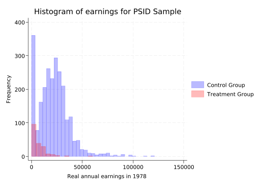
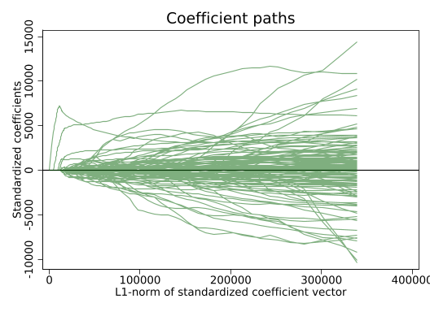
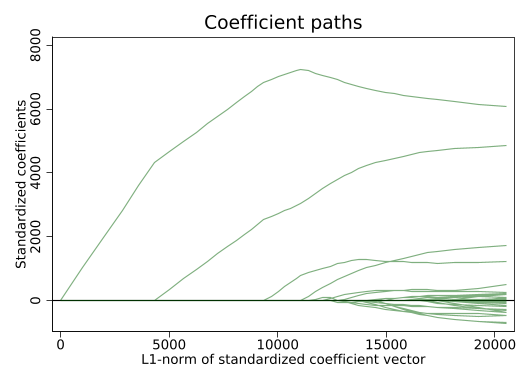
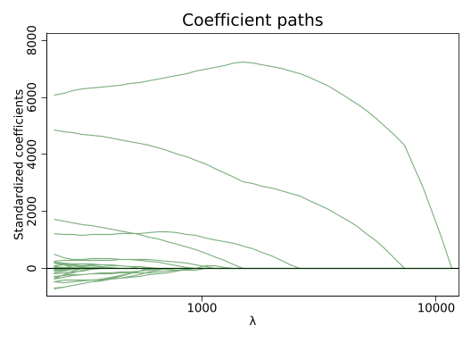
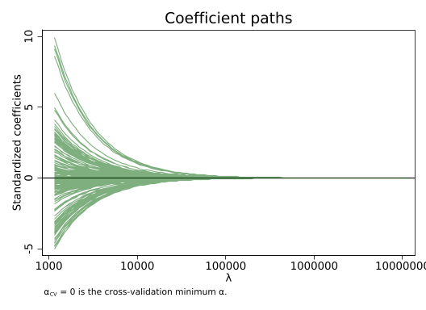
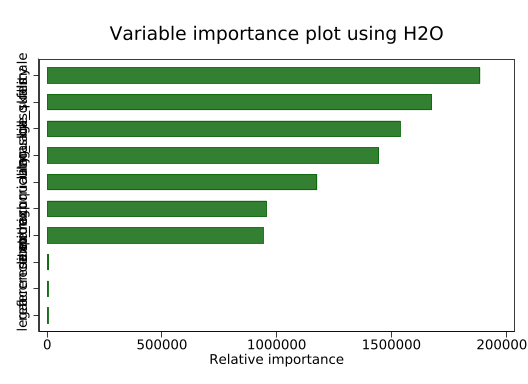
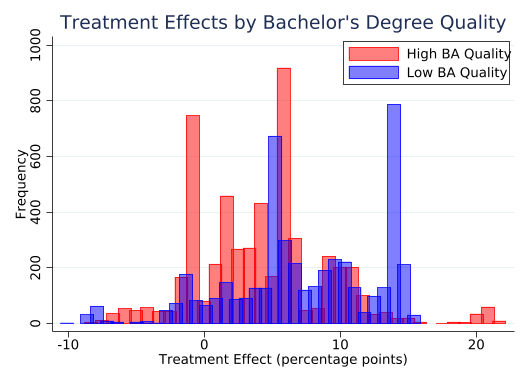
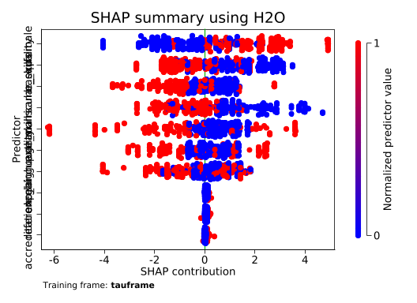

* Clear all the information in your memory.
clear all
* Disable pagination.
set more off Chapter 9
Code Call-out 9.1:
This Code Call Out is under construction.
As we have already seen in Chapter 3, this code call out estimates the effect of the experimental National Supported Work (NSW) demonstration, a labor training program on postintervention earnings estimated by LaLonde (1986). Individuals were randomly assigned to either a treated group -which participated in the approximately 12 month program-, or a control group that did not. Because this was an experimental evaluation, the treatment effect is known, and LaLonde (1986) aimed to document how the estimated effect varies when using an observational control group selected from large surveys.
This analysis was revisited later by Dehejia and Wahba (2002), Dehejia and Wahba (1999) using propensity score matching methods. In these studies, the authors considered the same treated group and estimated treatment effects matching it to a control group drawn from the same large surveys (specifically, the PSID and CPS from the United States). They observed that when propensity score matching procedure is used the observational methods actually do a reasonably good job in approximating the true experimental estimate.
In this case we will conduct a symilar analysis using Machine Learning methods revisiting the NSW data for treatment group, and both the NSW sample and PSID sanple for the comparison group following Farrell (2015). The main goal of this exercise is “model selection” rather than conducting a comprehensive evaluation of the labor training program.
This dataset consist of both the NSW experimental sample (nsw == 1) and the PSID survey sanple (nsw == 0) for control groups. Within both the NSW and PSID samples, there are treated and control units (indicated by the treat variable). The dataset also contains information about their earnings in 1978 (y) after the completition of the program (in case of treated observations), as well as several other demographic covariates and pre-treatment earnings (1974 and 1975). Specifically:
- y: earn1978
- treat: 1 if individual i received the training program and 0 if not.
- v3: age
- v4: education
- v5: black
- v6: hispanic
- v7: married
- v8: nodegree
- v9: re74
- v10: re75
- v11: re74 == 0
- v12: re75 == 0
- v13-v34: interactions of continuous variables (age, education, re74, re75 with
all covariates)
- v35-v48: interactions of dummy variables (married, black, hispanic, nodegree, re74==0,
re75==0 with dummy covariates)
- v49-v173: polynomials up to order five of the continuous covariates (age,
educ, earn1974 earn1975)
- nsw: 1 if dataset uses NSW sample for control group and 0 if dataset uses PSID sample.
It is important to note that the original dataset does not contain interactions of continuous variables, interactions of dummy variables and polynomials up to order five of the continuous variables. However, as our main goal is to study the model selection, including these covariates will enable us to evaluate multiple models simultaneously and test which one adjusts better in terms of bias-variance tradeoff and finds the best prediction of the outcome variable.
COMENTARIO: Podría incorporar cosas más formales sobre esto. Por lo que estuve revisando incorporar este tipo de variables no es baladí, y realmente es parte del procedimiento de Post Double Lasso (PD). Como la idea es mostrarle a la gente cómo usar lasso es importante recalcar que esto se debe hacer.
Mayores detalles del procedimiento están en el Belloni, Chernozhukov & Hansen (2014). La justificación del procedimiento es que este al incorporar un subconjunto de los controles aumentados (polinomios, dummys e interacciones seleccionados por Lasso) podemos eliminar el sesgo de selección y obtener estimaciones insesgadas. En la práctica esto ocurre si se cumple el supuesto de conditional independence y conociendo la forma reducida, de tal forma que el procedimiento PDS es imperfecto.
Important
The subsequent methods we will analyze involve rescaling all covariates to address overfitting. To ensure comparability among covariates, it is necessary to standardize all covariates in our dataset, excluding the dependent variable and the treatment indicator.
Import data and Ordinary Least Squares.
First, we clear all previous information from the program’s memory, disable result pagination in the output window, and set the directory for our data.
Now, we open the data provided by Farrell (2015) and begin our analysis.
* Import Farrell dataset.
import delimited "data/Farrell2015.csv", clear (encoding automatically selected: ISO-8859-2)
(174 vars, 3,120 obs)As an illustration, we can observe the number of individuals in the treatment and control groups for each of the samples using the command tab and calling the variable treat if we want to see the experimental sample NSW (nsw == 1) or the observational sample PSID (nsw == 0).
* Experimental sample (NSW).
tab treat if nsw == 1
treat | Freq. Percent Cum.
------------+-----------------------------------
0 | 260 58.43 58.43
1 | 185 41.57 100.00
------------+-----------------------------------
Total | 445 100.00* Observational sample (PSID).
tab treat if nsw == 0
treat | Freq. Percent Cum.
------------+-----------------------------------
0 | 2,490 93.08 93.08
1 | 185 6.92 100.00
------------+-----------------------------------
Total | 2,675 100.00In the experimental sample, there are a total of 445 observations, with 185 individuals in the treatment group and 260 individuals in the control group. In the non-experimental sample, there are 2,675 observations, with the same number of individuals in the treatment group and 2,490 in the control group.
Now we will analyze the impact of the training program on individuals’ earnings and compare the differences across each sample. Since we have 174 covariates, we can streamline our code using globals (which act as shortcuts) to reference each type of variable. To achieve this, we group each type of covariate under a specific global identifier. Given that we have 4 types of covariates, we will incorporate 4 globals accordingly.
* Definition of globals.
global covariates v3-v12
global continuous_interactions v13-v34
global dummy_interactions v35-v48
global polynomials v49-v173One of the main concerns of LaLonde (1986) is that in the non-experimental sample (nsw == 0), there exists a raw difference between the treated group and the control group. This disparity is evident when viewing a histogram where the groups are clearly unbalanced. You can check how these results differ when using the experimental sample (nsw == 1).
* Histogram of earnings for PSID Sample.
twoway (histogram y if nsw == 0 & treat == 0, color(blue%30) freq) ///
(histogram y if nsw == 0 & treat == 1, color(red%30) freq), ///
legend(label(1 "Control Group") label(2 "Treatment Group")) ///
title("Histogram of earnings for PSID Sample") ///
xtitle("Real annual earnings in 1978 ") ytitle("Frequency")
The simplest type of model to analize the impact of the labor program is a linear model only considering earnings (y) as dependent variable and treatment condition (treat) as independent variable. If our specification assumptions hold (unobservables in earnings and participation are uncorrelated), linear regression will provide an estimate of the Average Treatment Effect (ATE). In case of using the experimental sample with robust standard errors, this is equivalent to estimating:
reg y treat if nsw == 1, vce(robust)
Linear regression Number of obs = 445
F(1, 443) = 7.15
Prob > F = 0.0078
R-squared = 0.0178
Root MSE = 6579.5
------------------------------------------------------------------------------
| Robust
y | Coefficient std. err. t P>|t| [95% conf. interval]
-------------+----------------------------------------------------------------
treat | 1794.342 670.8245 2.67 0.008 475.9486 3112.736
_cons | 4554.801 340.2038 13.39 0.000 3886.187 5223.415
------------------------------------------------------------------------------This model predicts that the job training program implies an average of $1,794 extra annual earnings for treated individuals. These results are exactly the same results observed by LaLonde (1986). Throughout the rest of this notebook, this will serve as our ‘experimental benchmark’— the estimate from the randomized experiment — of the effect of the NSW program on the treatment group.
Note that to get these results it is not necessary to include control variables. This is because random assignment ensure us that both groups are comparable in terms of both observed an unobserved characteristics on average. Therefore, in terms of bias, we expect no selection bias that could affect our causal effect estimates.
On the other hand, estimating the effect of the labor program on annual earnings of the treatment group using the non-experimental control group is equivalent to estimating:
reg y treat if nsw == 0, vce(robust)
Linear regression Number of obs = 2,675
F(1, 2673) = 537.36
Prob > F = 0.0000
R-squared = 0.0609
Root MSE = 15152
------------------------------------------------------------------------------
| Robust
y | Coefficient std. err. t P>|t| [95% conf. interval]
-------------+----------------------------------------------------------------
treat | -15204.78 655.9142 -23.18 0.000 -16490.93 -13918.63
_cons | 21553.92 311.785 69.13 0.000 20942.56 22165.29
------------------------------------------------------------------------------This model predicts that the job training program results in an average decrease of $15,205 in annual earnings for treated individuals. As we can observe, these results are clearly biased due to the absence of randomization. A natural solution to reduce this bias is to include various covariates in our specification. By incorporating variables such as age, education, black, hispanic, married, nodegree, re74, and re75 into our regression, we obtain the following results:
reg y treat v3-v10 if nsw == 0, vce(robust)
Linear regression Number of obs = 2,675
F(9, 2665) = 225.08
Prob > F = 0.0000
R-squared = 0.5864
Root MSE = 10071
------------------------------------------------------------------------------
| Robust
y | Coefficient std. err. t P>|t| [95% conf. interval]
-------------+----------------------------------------------------------------
treat | 751.9464 783.257 0.96 0.337 -783.9066 2287.799
v3 | -2992.173 743.2279 -4.03 0.000 -4449.535 -1534.811
v4 | 7336.013 1516.569 4.84 0.000 4362.242 10309.78
v5 | 1123.164 451.7389 2.49 0.013 237.3696 2008.958
v6 | -308.3528 236.6615 -1.30 0.193 -772.4116 155.706
v7 | 401.2603 225.8085 1.78 0.076 -41.51726 844.0378
v8 | 6346.753 1409.224 4.50 0.000 3583.47 9110.037
v9 | 12846.48 1502.91 8.55 0.000 9899.491 15793.47
v10 | 340.8424 367.6334 0.93 0.354 -380.0332 1061.718
_cons | -129.7428 1878.371 -0.07 0.945 -3812.955 3553.469
------------------------------------------------------------------------------As we can see, our model still produces a biased estimator of the effect of the training program on annual earnings. Although this adjustment is an improvement over including only the treatment status as acovariate, it still assumes that the observable characteristics of the trainees and the comparison group differ, and their unobservable characteristics may also differ (LaLonde (1986)).
Lasso Selection and Regressions with Selected Covariates.
In non-experimental evaluations, treatment effects depend heavily on how the econometric model is specified. In the best scenario if the econometric model perfectly specified, we should observe the same results using an experimental and non-experimental samples. The key is to select the right model.
Given the previous analysis, we could attempt to overfit our model by including all available covariates in our dataset. This is equivalent to estimating:
global covariates v3-v12
global continuous_interactions v13-v34
global dummy_interactions v35-v48
global polynomials v49-v173
reg y treat $covariates $continuous_interactions $dummy_interactions $polynomials if nsw == 0, vce(robust)note: v3 omitted because of collinearity.
note: v4 omitted because of collinearity.
note: v8 omitted because of collinearity.
note: v9 omitted because of collinearity.
Linear regression Number of obs = 2,675
F(167, 2506) = .
Prob > F = .
R-squared = 0.6874
Root MSE = 9028.8
------------------------------------------------------------------------------
| Robust
y | Coefficient std. err. t P>|t| [95% conf. interval]
-------------+----------------------------------------------------------------
treat | 83.16417 933.4516 0.09 0.929 -1747.251 1913.58
v3 | 0 (omitted)
v4 | 0 (omitted)
v5 | 151.6623 3915.343 0.04 0.969 -7525.977 7829.302
v6 | -1788.133 2775.19 -0.64 0.519 -7230.034 3653.767
v7 | 358.0089 1301.305 0.28 0.783 -2193.735 2909.753
v8 | 0 (omitted)
v9 | 0 (omitted)
v10 | 16610.47 11950.49 1.39 0.165 -6823.372 40044.31
v11 | 681.6246 3843.224 0.18 0.859 -6854.596 8217.845
v12 | -8767.059 4619.227 -1.90 0.058 -17824.95 290.835
v13 | 1826.115 1968.662 0.93 0.354 -2034.258 5686.487
v14 | 305.0906 1845.292 0.17 0.869 -3313.364 3923.545
v15 | 1230.578 1004.913 1.22 0.221 -739.967 3201.123
v16 | -874.1246 455.5494 -1.92 0.055 -1767.416 19.16722
(output omitted)
v169 | 224837 53496.04 4.20 0.000 119936.1 329738
v170 | -29179.86 9788.164 -2.98 0.003 -48373.58 -9986.138
v171 | -40788.65 13025.43 -3.13 0.002 -66330.35 -15246.95
v172 | -124324.1 46024.21 -2.70 0.007 -214573.4 -34074.7
v173 | 37485.28 9322.151 4.02 0.000 19205.37 55765.19
_cons | 48101.05 8368.783 5.75 0.000 31690.61 64511.48
------------------------------------------------------------------------------In this case, despite a slight improvement in our R-squared by including 174 covariates, our model produces a poorer estimator compared to when only 8 covariates were included (and remains biased). The reasoning is that when our model becomes overly complex relative to the available data, it may capture many specific fluctuations that reduce its predictive power. These issues can be addressed using Machine Learning techniques such as model selection and tuning, cross-validation, and regularization to penalize the unnecessary complexity of our model.
Lasso Selection (with an arbitrary penalty):
When dealing with numerous explanatory variables, we can enhance our model by introducing additional penalties to discourage the inclusion of many variables. This can be achieved using the ‘Least Absolute Shrinkage and Selection Operator (LASSO)’ method. The Lasso method extends our Ordinary Least Squares (OLS) optimization problem by adding a constraint on the coefficients, which enforces some of them to be exactly zero. This coefficient shrinkage is controlled by a ‘lambda’ parameter that determines the strength of the regularization.
Lasso regression regularizes includes the sum of the absolute value of coefficients in the estimation minimand.
\[ \underset{\beta}{\text{argmin}}\left\{\sum_{i=1}^N(Y_i-X^\prime\beta)^2+\lambda(||\beta||_1)\right\} \tag{1}\]
During the optimization process, Lasso eliminates all covariates that are not significantly correlated with the outcome variable, thereby aiding in model selection and enabling more efficient predictions.
Considering the NSW sample we first analyze what happen when we impose an arbitrary value of lambda. When lambda equals 0 there is no penalty and we are in the same situation as OLS. No coefficients are set to zero and all covariates are selected. As we increase the value of lambda more coefficients are zero and fewer variables are used.
To run Lasso selection we can use the command lasso linear, including the dependent variable and all the covariates in our model. It is important to exclude the treatment variable from this process to accurately determine the optimal lambda parameter. Since most selection processes are random, we should set a seed to ensure reproducibility. Selecting an arbitrary lambda can be done using the selection(none) option of Lasso command. In this case we impose a lambda value of 10.
global covariates v3-v12
global continuous_interactions v13-v34
global dummy_interactions v35-v48
global polynomials v49-v173
* Lasso selection with lambda value of 10.
lasso linear y $covariates $continuous_interactions $dummy_interactions $polynomials if nsw == 0, selection(none) rseed(1234)
lassoselect lambda = 10note: v49 omitted because of collinearity with another variable.
note: v54 omitted because of collinearity with another variable.
note: v69 omitted because of collinearity with another variable.
note: v104 omitted because of collinearity with another variable.
Evaluating up to 100 lambdas in grid ...
Grid value 1: lambda = 11620.7 no. of nonzero coef. = 0
Grid value 2: lambda = 10588.35 no. of nonzero coef. = 1
Grid value 3: lambda = 9647.706 no. of nonzero coef. = 1
(output omitted)
Grid value 91: lambda = 2.684532 no. of nonzero coef. = 142
Grid value 92: lambda = 2.446045 no. of nonzero coef. = 142
note: convergence for the lasso penalty = 2.446045 not reached after 100000
iterations; solutions for larger penalty values returned.
Lasso linear model No. of obs = 2,675
No. of covariates = 167
Selection: None
--------------------------------------------------------------------------
| No. of
| nonzero In-sample
ID | Description lambda coef. R-squared BIC
---------+----------------------------------------------------------------
1 | first lambda 11620.7 0 0.0000 59263.74
91 | last lambda 2.684532 142 0.6760 57369.94
--------------------------------------------------------------------------
Note: No lambda selected. lassoselect can be used to select lambda.
ID = 77 lambda = 9.874727 selectedTo see which covariates are retained after the selection process in list format, we can use the command lassocoef.
global covariates v3-v12
global continuous_interactions v13-v34
global dummy_interactions v35-v48
global polynomials v49-v173
cap lasso linear y $covariates $continuous_interactions $dummy_interactions $polynomials if nsw == 0, selection(none) rseed(1234)
cap lassoselect lambda = 10
* Lasso selected variables (with an arbitrary penalty of 10).
lassocoef
------------------------
| active
-------------+----------
v3 | x
v4 | x
v6 | x
v8 | x
v9 | x
v11 | x
v12 | x
v15 | x
v16 | x
v17 | x
v19 | x
v20 | x
v22 | x
v24 | x
v25 | x
v26 | x
v27 | x
v28 | x
v30 | x
v31 | x
v32 | x
v33 | x
v34 | x
v35 | x
v36 | x
v37 | x
v38 | x
v40 | x
v42 | x
v43 | x
v44 | x
v45 | x
v46 | x
v47 | x
v48 | x
v51 | x
v52 | x
v53 | x
v55 | x
v56 | x
v57 | x
v58 | x
v60 | x
v61 | x
v62 | x
v63 | x
v65 | x
v66 | x
v67 | x
v68 | x
v70 | x
v71 | x
v72 | x
v73 | x
v75 | x
v76 | x
v77 | x
v78 | x
v79 | x
v80 | x
v81 | x
v82 | x
v83 | x
v86 | x
v87 | x
v89 | x
v91 | x
v92 | x
v93 | x
v95 | x
v96 | x
v97 | x
v98 | x
v100 | x
v101 | x
v102 | x
v103 | x
v105 | x
v106 | x
v107 | x
v108 | x
v109 | x
v110 | x
v111 | x
v112 | x
v113 | x
v116 | x
v117 | x
v118 | x
v120 | x
v121 | x
v122 | x
v123 | x
v124 | x
v125 | x
v126 | x
v128 | x
v129 | x
v130 | x
v133 | x
v135 | x
v136 | x
v137 | x
v138 | x
v141 | x
v142 | x
v144 | x
v145 | x
v147 | x
v148 | x
v151 | x
v153 | x
v159 | x
v160 | x
v161 | x
v162 | x
v163 | x
v164 | x
v170 | x
v171 | x
v172 | x
v173 | x
_cons | x
------------------------
Legend:
b - base level
e - empty cell
o - omitted
x - estimatedThen, when imposing a lambda value of 10, Lasso selected 122 out of the 172 available covariates. As mentioned above, this represents a relatively small penalty. If we choose a larger penalty, such as lambda equals 1000, we should expect fewer covariates to be selected.
global covariates v3-v12
global continuous_interactions v13-v34
global dummy_interactions v35-v48
global polynomials v49-v173
cap lasso linear y $covariates $continuous_interactions $dummy_interactions $polynomials if nsw == 0, selection(none) rseed(1234)
* Selecting an arbitrary penalty of 1000 and visualization of the selected variables.
lassoselect lambda = 1000
lassocoefID = 27 lambda = 1034.492 selected
------------------------
| active
-------------+----------
v4 | x
v8 | x
v9 | x
v34 | x
v123 | x
v126 | x
_cons | x
------------------------
Legend:
b - base level
e - empty cell
o - omitted
x - estimatedAs we can see, with lambda equals 1000 only 6 covariates are selected.
Another way to analyze this is by graphing the coefficients’ path using the coefpath command.
global covariates v3-v12
global continuous_interactions v13-v34
global dummy_interactions v35-v48
global polynomials v49-v173
qui lasso linear y $covariates $continuous_interactions $dummy_interactions $polynomials if nsw == 0, selection(none) rseed(1234)
set scheme s1color
set scheme s1color
* Coefficient paths for each L1 norm.
coefpath
qui graph export figures/lasso1.png, replace 
This graph shows how each coefficient changes with varying values of the Lasso penalty (L1-norm). Recall that the L1-norm is the sum of the absolute values of all regression coefficients. Since we did not use a selection method, the graph displays the path of all coefficients. As we will see later, after applying a selection method, all non-selected coefficients should converge to zero. The remaining coefficients are those selected by Lasso.
Considering the covariates selected by Lasso, we can run a regression for the non-experimental sample. As mentioned above, models using only the treatment variable or the treatment plus all covariates resulted in biased estimators of coefficients. By using the 122 covariates selected with a lambda value of 10 and the 6 covariates selected with a lambda value of 1000, this is equivalent to estimate:
* Regression with coefficients selected considering a lambda value of 10.
reg y treat v3 v4 v6 v8 v9 v11 v12 v15 v16 v17 v19 v20 v22 v24 v25 v26 v27 v28 v30 v31 v32 v33 v34 v35 v36 v37 v38 v40 v42 v43 v44 v45 v46 v47 v48 v51 v52 v53 v55 v56 v57 v58 v60 v61 v62 v63 v65 v66 v67 v68 v70 v71 v72 v73 v75 v76 v77 v78 v79 v80 v81 v82 v83 v86 v87 v89 v91 v92 v93 v95 v96 v97 v98 v100 v101 v102 v103 v105 v106 v107 v108 v109 v110 v111 v112 v113 v116 v117 v118 v120 v121 v122 v123 v124 v125 v126 v128 v129 v130 v133 v135 v136 v137 v138 v141 v142 v144 v145 v147 v148 v151 v153 v159 v160 v161 v162 v163 v164 v170 v171 v172 v173 if nsw == 0, vce(robust)Linear regression Number of obs = 2,675
F(123, 2551) = 468.12
Prob > F = 0.0000
R-squared = 0.6724
Root MSE = 9160.2
------------------------------------------------------------------------------
| Robust
y | Coefficient std. err. t P>|t| [95% conf. interval]
-------------+----------------------------------------------------------------
treat | 334.7818 980.0787 0.34 0.733 -1587.049 2256.612
v3 | -3449.008 2730.969 -1.26 0.207 -8804.149 1906.133
v4 | -20.83653 3606.992 -0.01 0.995 -7093.767 7052.094
v6 | -1499.939 749.0661 -2.00 0.045 -2968.778 -31.09943
v8 | 10129.66 3343.397 3.03 0.002 3573.615 16685.71
v9 | 5545.703 3251.078 1.71 0.088 -829.317 11920.72
(output omitted)
v163 | -321.0293 2603.47 -0.12 0.902 -5426.159 4784.101
v164 | 1728.817 835.7959 2.07 0.039 89.90999 3367.725
v170 | 172.3127 1429.495 0.12 0.904 -2630.777 2975.402
v171 | -1316.997 1027.744 -1.28 0.200 -3332.294 698.3
v172 | 14566.11 3158.667 4.61 0.000 8372.297 20759.92
v173 | -1837.434 656.7082 -2.80 0.005 -3125.169 -549.6985
_cons | 10396.44 4594.01 2.26 0.024 1388.076 19404.81
------------------------------------------------------------------------------* Regression with coefficients selected considering a lambda value of 1000.
reg y treat v4 v8 v9 v34 v123 v126 if nsw == 0, vce(robust)
Linear regression Number of obs = 2,675
F(7, 2667) = 335.90
Prob > F = 0.0000
R-squared = 0.5967
Root MSE = 9941.1
------------------------------------------------------------------------------
| Robust
y | Coefficient std. err. t P>|t| [95% conf. interval]
-------------+----------------------------------------------------------------
treat | 579.1528 698.6503 0.83 0.407 -790.7983 1949.104
v4 | 7309.19 1052.364 6.95 0.000 5245.657 9372.723
v8 | 8549.012 1408.355 6.07 0.000 5787.434 11310.59
v9 | 10305.27 1384.024 7.45 0.000 7591.404 13019.14
v34 | 1840.084 495.204 3.72 0.000 869.0617 2811.107
v123 | -150.7897 594.1298 -0.25 0.800 -1315.791 1014.212
v126 | 977.7429 548.9583 1.78 0.075 -98.6841 2054.17
_cons | -1869.905 1027.304 -1.82 0.069 -3884.298 144.4886
------------------------------------------------------------------------------As we can see, this regression still estimates biased coefficients. With 122 covariates, the model predicts that the job training program results in an average of $335 extra annual earnings for treated individuals. With 6 covariates, the model predicts an average of $579 extra annual earnings. Considering our experimental benchmark — the $1,794 estimate from the randomized experiment in ?@tbl-Experimental-Benchmark — and the non-experimental estimate of $-15,204 using only the treatment variable of ?@tbl-Observational-Benchmark, this represents a clear improvement in our estimation when using observational data. Additionally, in both cases, we obtain higher R-squared values. However, these results are still worse compared to the non-experimental estimate with the treatment variable plus all demographic covariates in ?@tbl-Observational-Benchmark-Covariates, which is $751 extra annual earnings on average for treated individuals.
Lasso Selection (with cross-validation).
We can improve these results by using cross-validation to determine the penalties for covariate selection, rather than imputing an arbitrary value for lambda. This can be achieved by using the selection(cv) option within the lasso linear command.
global covariates v3-v12
global continuous_interactions v13-v34
global dummy_interactions v35-v48
global polynomials v49-v173
* Lasso selected variables (with cross-validation penalties).
lasso linear y $covariates $continuous_interactions $dummy_interactions $polynomials if nsw == 0, selection(cv) rseed(1234)
lassocoef note: v49 omitted because of collinearity with another variable.
note: v54 omitted because of collinearity with another variable.
note: v69 omitted because of collinearity with another variable.
note: v104 omitted because of collinearity with another variable.
10-fold cross-validation with 100 lambdas ...
Grid value 1: lambda = 11620.7 no. of nonzero coef. = 0
Folds: 1...5....10 CVF = 2.44e+08
Grid value 2: lambda = 10588.35 no. of nonzero coef. = 1
Folds: 1...5....10 CVF = 2.22e+08
Grid value 3: lambda = 9647.706 no. of nonzero coef. = 1
Folds: 1...5....10 CVF = 2.03e+08
(output omitted)
Grid value 41: lambda = 281.2358 no. of nonzero coef. = 26
Folds: 1...5....10 CVF = 1.00e+08
Grid value 42: lambda = 256.2515 no. of nonzero coef. = 33
Folds: 1...5....10 CVF = 1.01e+08
Grid value 43: lambda = 233.4869 no. of nonzero coef. = 35
Folds: 1...5....10 CVF = 1.04e+08
... cross-validation complete ... minimum found
Lasso linear model No. of obs = 2,675
No. of covariates = 167
Selection: Cross-validation No. of CV folds = 10
--------------------------------------------------------------------------
| No. of Out-of- CV mean
| nonzero sample prediction
ID | Description lambda coef. R-squared error
---------+----------------------------------------------------------------
1 | first lambda 11620.7 0 0.0024 2.44e+08
39 | lambda before 338.7495 18 0.5892 1.00e+08
* 40 | selected lambda 308.6559 21 0.5896 1.00e+08
41 | lambda after 281.2358 26 0.5892 1.00e+08
43 | last lambda 233.4869 35 0.5750 1.04e+08
--------------------------------------------------------------------------
* lambda selected by cross-validation.
------------------------
| active
-------------+----------
v3 | x
v4 | x
v8 | x
v9 | x
v19 | x
v22 | x
v28 | x
v34 | x
v40 | x
v59 | x
v73 | x
v84 | x
v95 | x
v118 | x
v126 | x
v137 | x
v141 | x
v148 | x
v161 | x
v163 | x
v167 | x
_cons | x
------------------------
Legend:
b - base level
e - empty cell
o - omitted
x - estimatedIn this case, using 10-fold cross-validation, the lambda that minimizes the mean squared error and helps avoid overfitting is 309. With this tuning parameter, we only need to include 21 covariates in our regression model. Graphically, we can observe the coefficients’ path for all remaining estimates.
global covariates v3-v12
global continuous_interactions v13-v34
global dummy_interactions v35-v48
global polynomials v49-v173
qui lasso linear y $covariates $continuous_interactions $dummy_interactions $polynomials if nsw == 0, selection(cv) rseed(1234)
lassocoef
set scheme s1color
* Coefficient paths for each L1 norm.
coefpath
------------------------
| active
-------------+----------
v3 | x
v4 | x
v8 | x
v9 | x
v19 | x
v22 | x
v28 | x
v34 | x
v40 | x
v59 | x
v73 | x
v84 | x
v95 | x
v118 | x
v126 | x
v137 | x
v141 | x
v148 | x
v161 | x
v163 | x
v167 | x
_cons | x
------------------------
Legend:
b - base level
e - empty cell
o - omitted
x - estimated
None of the coefficients converges to zero with the lambda selected by cross-validation. By using the xunits(lnlambda) option, we can determine the lambda required to eliminate covariates that are not significantly correlated with the outcome variable. A higher lambda imposes a stronger regularization process.
global covariates v3-v12
global continuous_interactions v13-v34
global dummy_interactions v35-v48
global polynomials v49-v173
qui lasso linear y $covariates $continuous_interactions $dummy_interactions $polynomials if nsw == 0, selection(cv) rseed(1234)
lassocoef
set scheme s1color
* Coefficient paths for each lambda.
coefpath, xunits(lnlambda)
------------------------
| active
-------------+----------
v3 | x
v4 | x
v8 | x
v9 | x
v19 | x
v22 | x
v28 | x
v34 | x
v40 | x
v59 | x
v73 | x
v84 | x
v95 | x
v118 | x
v126 | x
v137 | x
v141 | x
v148 | x
v161 | x
v163 | x
v167 | x
_cons | x
------------------------
Legend:
b - base level
e - empty cell
o - omitted
x - estimated
Considering the non-experimental sample and the optimal covariates selected through cross-validation penalties, we can estimate the effect of the labor program on individuals’ earnings. This is equivalent to estimate:
qui {
global covariates v3-v12
global continuous_interactions v13-v34
global dummy_interactions v35-v48
global polynomials v49-v173
lasso linear y $covariates $continuous_interactions $dummy_interactions $polynomials if nsw == 0, selection(cv) rseed(1234)
lassocoef
local selectedVars = e(othervars_sel)
}
reg y treat `selectedVars' if nsw == 0, vce(robust)
Linear regression Number of obs = 2,675
F(22, 2652) = 180.13
Prob > F = 0.0000
R-squared = 0.6126
Root MSE = 9770.1
------------------------------------------------------------------------------
| Robust
y | Coefficient std. err. t P>|t| [95% conf. interval]
-------------+----------------------------------------------------------------
treat | 1353.069 833.9902 1.62 0.105 -282.2679 2988.406
v3 | -3608.468 693.1811 -5.21 0.000 -4967.699 -2249.238
v4 | 4109.422 1103.693 3.72 0.000 1945.235 6273.61
v8 | 8583.135 1278.929 6.71 0.000 6075.335 11090.93
v9 | 9735.261 1332.888 7.30 0.000 7121.656 12348.87
v19 | 700.9984 470.3485 1.49 0.136 -221.2886 1623.285
v22 | 320.3924 229.346 1.40 0.163 -129.3227 770.1076
v28 | 225.2887 313.9665 0.72 0.473 -390.3553 840.9328
v34 | 2093.92 485.2096 4.32 0.000 1142.492 3045.348
v40 | -519.4305 237.8903 -2.18 0.029 -985.8997 -52.96124
v59 | 589.5394 290.7956 2.03 0.043 19.33035 1159.749
v73 | 410.1189 261.1037 1.57 0.116 -101.8686 922.1063
v84 | -1232.012 447.6188 -2.75 0.006 -2109.729 -354.2946
v95 | -176.1476 434.77 -0.41 0.685 -1028.67 676.3749
v118 | -568.6715 278.7456 -2.04 0.041 -1115.252 -22.09063
v126 | 417.6603 784.2225 0.53 0.594 -1120.089 1955.41
v137 | -316.2709 441.5438 -0.72 0.474 -1182.076 549.5342
v141 | -1124.527 448.407 -2.51 0.012 -2003.79 -245.2642
v148 | 470.6581 259.3392 1.81 0.070 -37.86955 979.1858
v161 | -379.4774 455.9425 -0.83 0.405 -1273.516 514.5616
v163 | -556.0189 277.1439 -2.01 0.045 -1099.459 -12.57887
v167 | -754.0692 848.0779 -0.89 0.374 -2417.03 908.8918
_cons | 4368.18 1319.389 3.31 0.001 1781.045 6955.315
------------------------------------------------------------------------------
Use locals to simplify your code.
In the previous section, we manually included all regression coefficients in our model. Given that we used 122 covariates, this process could be tedious and prone to involuntary mistakes. To streamline this task in stata we can take advantage of local macros.
A local is a local macro that exist solely within the Stata session. Locals can be used to store text and numbers, and are especially useful to simplifying repetitive tasks, make code easier to read, and avoiding errors.
In the context of Lasso, you should first run the lassocoef command after performing the selection method. The names of the selected coefficients are then stored in the e(othervars_sel) estimation results macro. You can define a local macro using local selectedVars = e(othervars_sel), where “selectedVars” is the name of the local macro that will be used for referencing.
As we can see, with 21 covariates, we obtain a better approximation of the experimental benchmark of table ?@tbl-Experimental-Benchmark. In this case, the model predicts that the job training program results in an average increase of $1,353 in annual earnings for treated individuals. What is particularly notable is that these results are similar to those found by Dehejia and Wahba (2002) and Dehejia and Wahba (1999), who estimated using Propensity Score Matching (PSM) for the non-experimental sample that the estimates could range between $1,473 and $1,691. Like their results, none of the estimates (using PSM and Lasso) are statistically significant.
COMENTARIO: En el paper de Angrist y Frandsen se dice que ML puede aproximar bien los resultados obtenidos por PSM. Para esto citan a Goller, et al. (2019). Quizás se podría agregar a esta parte a modo de "justificación" o comparación. Considering the results shown above, it is important to emphasize that Machine Learning methods do not create quasi-experimental variations. These methods only select covariates from a large set of potential candidates. This implies that none of these results can be considered causal estimates of the program. To achieve causal estimates, the conditional independence assumption must hold (Angrist and Frandsen (2022)).
Some comments about the Post-Lasso procedure.
The presented procedure is called Post-Lasso. It involves using the Lasso-selected set of regressors for the dependent variable against all covariates to refit the model using least squares. One of the main characteristics of this procedure is that it helps remove the bias imposed by Lasso when shrinking coefficients towards zero. In contexts where the sample size is larger than the effective number of relevant covariates needed to predict the dependent variable (sometimes called the effective dimension), Lasso and Post-Lasso regression come close to the population regression function (C. &. K. Chernozhukov V. & Hansen (2024)).
In the context of high-dimensional data, this property is less likely to hold. Many authors argue that when the number of effective covariates exceeds the number of observations, Post-Lasso can lead to biased estimators and incorrect confidence intervals.
A different procedure proposed in the literature is called Post-Double Lasso. This procedure consists in three steps:
Regress
yagainst all control variables and select relevant predictors using Lasso (i.e estimate Equation 1).Regress
treatagainst all control variables and select relevant predictors using Lasso.Regress
yagainsttreatand all control variables selected in the previous two steps.
By performing Post-Double Lasso, we can address part of the omitted-variable bias that might arise using Post-Lasso when not considering relevant variables correlated with the treatment variable, and obtain more accurate confidence intervals.
Ridge & Elastic Net.
Ridge Regressions.
In Machine Learning we commonly see alternative models which apply penalization techniques, or shrinkage methods, like the Lasso. Two common examples are Ridge and Elastic Net, which we will explore here. Ridge regression follows the same logic as Lasso regression but uses a different norm for the regularization procedure. In this case we include the sum of squared regression coefficients in the estimation minimand.
\[ \underset{\beta}{\text{argmin}}\left\{\sum_{i=1}^N(Y_i-X_i^\prime\beta)^2 +\lambda\sum_{j=1}^p\beta_j^2\right\}. \tag{2}\]
This change implies that Ridge Regression penalizes high coefficient values by introducing a penalty that shrinks them towards zero, but never sets them exactly to zero. As a result, this regularization method is not suitable for model selection but is useful in high-dimensional models where overfitting is a concern. The main goal of Ridge regression is to find coefficients estimates that fit the data well, by making the Residual Sum of Squares (RSS) small.
To perform Ridge regression, we use the command elasticnet linear, including the dependent variable and all the covariates in our model. As with Lasso regression, we include a seed to ensure reproducibility. The main difference is that we need to select the option alpha(0) in the command line and include the treatment indicator variable to assess the treatment effect after shrinkage.
global covariates v3-v12
global continuous_interactions v13-v34
global dummy_interactions v35-v48
global polynomials v49-v173
* Ridge regularization (with cross-validation penalties).
elasticnet linear y treat $covariates $continuous_interactions $dummy_interactions $polynomials if nsw == 0, selection(cv) rseed(1234) alpha(0)note: v49 omitted because of collinearity with another variable.
note: v54 omitted because of collinearity with another variable.
note: v69 omitted because of collinearity with another variable.
note: v104 omitted because of collinearity with another variable.
Evaluating up to 100 lambdas in grid ...
Grid value 1: lambda = 1.16e+12 no. of nonzero coef. = 168
Grid value 2: lambda = 1.06e+07 no. of nonzero coef. = 168
Grid value 3: lambda = 9647706 no. of nonzero coef. = 168
(output omitted)
Grid value 99: lambda = 1275.37 no. of nonzero coef. = 168
Grid value 100: lambda = 1162.07 no. of nonzero coef. = 168
10-fold cross-validation with 100 lambdas ...
Fold 1 of 10: 10....20....30....40....50....60....70....80....90....100
Fold 2 of 10: 10....20....30....40....50....60....70....80....90....100
Fold 3 of 10: 10....20....30....40....50....60....70....80....90....100
Fold 4 of 10: 10....20....30....40....50....60....70....80....90....100
Fold 5 of 10: 10....20....30....40....50....60....70....80....90....100
Fold 6 of 10: 10....20....30....40....50....60....70....80....90....100
Fold 7 of 10: 10....20....30....40....50....60....70....80....90....100
Fold 8 of 10: 10....20....30....40....50....60....70....80....90....100
Fold 9 of 10: 10....20....30....40....50....60....70....80....90....100
Fold 10 of 10: 10....20....30....40....50....60....70....80....90....100
... cross-validation complete
Elastic net linear model No. of obs = 2,675
No. of covariates = 168
Selection: Cross-validation No. of CV folds = 10
-------------------------------------------------------------------------------
| No. of Out-of- CV mean
| nonzero sample prediction
alpha ID | Description lambda coef. R-squared error
---------------+---------------------------------------------------------------
0.000 |
1 | first lambda 1.16e+07 168 -0.0008 2.44e+08
99 | lambda before 1275.37 168 0.0080 2.42e+08
* 100 | selected lambda 1162.07 168 0.0088 2.42e+08
-------------------------------------------------------------------------------
* alpha and lambda selected by cross-validation.As we can see, the lambda that optimizes our objective function is 1162, and all covariates were selected. We can plot each standardized variable as a function of lambda using the command coefpath, xunits(lnlambda).
global covariates v3-v12
global continuous_interactions v13-v34
global dummy_interactions v35-v48
global polynomials v49-v173
qui elasticnet linear y treat $covariates $continuous_interactions $dummy_interactions $polynomials if nsw == 0, selection(cv) rseed(1234) alpha(0)
set scheme s1color
* Coefficient paths for each lambda.
coefpath, xunits(lnlambda)
Here, each coefficient curve represents the estimate of each Ridge regression coefficient for the standardized variables plotted as a function of lambda. As lambda increases, the coefficients are pushed towards zero, but they will never be exactly zero.
With the tuning parameter lambda set to 1162, we can estimate our coefficients using the display(coef, penalized) option in the lassocoef command. If we omit the penalized option, Stata will display standardized coefficients instead.
global covariates v3-v12
global continuous_interactions v13-v34
global dummy_interactions v35-v48
global polynomials v49-v173
qui elasticnet linear y treat $covariates $continuous_interactions $dummy_interactions $polynomials if nsw == 0, selection(cv) rseed(1234) alpha(0)
lassocoef, display(coef, penalized) | active
-------------+----------
treat | -12.91492
v3 | 4.818648
v4 | 20.02812
v5 | 6.920948
v6 | -4.266875
v7 | -.1753192
v8 | 15.58543
v9 | 16.14201
v10 | -4.843968
v11 | -4.737625
v12 | -5.379324
v13 | 5.342203
v14 | -4.04517
v15 | -3.706367
v16 | -.180374
(output omitted)
v169 | -.0814454
v170 | -.2163144
v171 | -.7421553
v172 | -.3664065
v173 | -.2220712
_cons | 20436.35
------------------------
Legend:
b - base level
e - empty cell
o - omittedComparing these results with the simple regression of y on the treatment indicator and all covariates (see ?@tbl-Observational-Benchmark), we can see that all covariates experienced substantial shrinkage. Compared to Lasso, Ridge regression does not allow us to avoid shrinkage, as we cannot extract covariates and apply them in an OLS regression. Given the high level of penalization, these results are expected. Another remarkable result is that v3, v4, v8 and v9 were not ommited in our estimations as OLS did without penalization. This is due an important property of Ridge estimators: they do not suffer from multicollinearity. This is an important property which holds even when the number of regressors exceeds the sample size.
Checking the unpenalized estimates.
If we want to check the unpenalized estimates, we can use the command lassocoef, display(coef, postestimation) to view all coefficient estimates after running the elasticnet linear command. Alternatively, we can use the command matlist r(table) to see all coefficients, standard errors, and other inference statistics.
elasticnet linear y treat $covariates $continuous_interactions $dummy_interactions $polynomials if nsw == 0, selection(cv) rseed(1234) alpha(0)
lassocoef, display(coef, postestimation)
elasticnet linear y treat $covariates $continuous_interactions $dummy_interactions $polynomials if nsw == 0, selection(cv) rseed(1234) alpha(0)
matlist r(table)Elastic Net.
There are some contexts in which you might be working with datasets containing numerous covariates—so many that it is impractical to know everything about each one. In these cases we certainly need to use some regularization methods to estimate our coefficients effectively. The main challenge is that, in this context, we may have many covariates that are useless and many others that are useful. This is where Elastic Net comes into play.
Elastic Net is a regularization method that combines the advantages of Lasso and Ridge regression by taking a weighted average of their penalties.
\[ \underset{\beta}{\text{argmin}}\left\{\sum_{i=1}^N(Y_i-X_i^\prime\beta)^2 + \sum_{j=1}^p(\alpha|\beta_j|+(1-\alpha)\beta_j^2)\right\}, \tag{3}\]
where the weight alpha ranges between 0 and 1. When alpha equals 0, the method reduces to Ridge regression, as discussed in the previous section. Conversely, when alpha equals 1, it corresponds to Lasso regression. Both parameters, alpha and lambda, are determined using cross-validation.
To perform Elastic Net regression, use the command elasticnet linear, specifying the dependent variable, the treatment indicator variable, and all the covariates in the model. We ensure reproducibility by including a seed.
global covariates v3-v12
global continuous_interactions v13-v34
global dummy_interactions v35-v48
global polynomials v49-v173
* Elastic Net regularization (with cross-validation penalties).
elasticnet linear y $covariates $continuous_interactions $dummy_interactions $polynomials if nsw == 0, selection(cv) rseed(1234)alpha 1 of 3: alpha = 1
note: v49 omitted because of collinearity with another variable.
note: v54 omitted because of collinearity with another variable.
note: v69 omitted because of collinearity with another variable.
note: v104 omitted because of collinearity with another variable.
10-fold cross-validation with 109 lambdas ...
Grid value 1: lambda = 23241.39 no. of nonzero coef. = 0
Folds: 1...5....10 CVF = 2.44e+08
Grid value 2: lambda = 21176.69 no. of nonzero coef. = 0
Folds: 1...5....10 CVF = 2.44e+08
(output omitted)
Grid value 50: lambda = 281.2358 no. of nonzero coef. = 26
Folds: 1...5....10 CVF = 1.00e+08
Grid value 51: lambda = 256.2515 no. of nonzero coef. = 33
Folds: 1...5....10 CVF = 1.01e+08
Grid value 52: lambda = 233.4869 no. of nonzero coef. = 35
Folds: 1...5....10 CVF = 1.04e+08
... cross-validation complete ... minimum found
alpha 2 of 3: alpha = 0.75
note: v49 omitted because of collinearity with another variable.
note: v54 omitted because of collinearity with another variable.
note: v69 omitted because of collinearity with another variable.
note: v104 omitted because of collinearity with another variable.
10-fold cross-validation with 109 lambdas ...
Grid value 1: lambda = 23241.39 no. of nonzero coef. = 0
Folds: 1...5....10 CVF = 2.44e+08
Grid value 2: lambda = 21176.69 no. of nonzero coef. = 0
Folds: 1...5....10 CVF = 2.44e+08
(output omitted)
Grid value 74: lambda = 30.15599 no. of nonzero coef. = 163
Folds: 1...5....10 CVF = 1.89e+08
Grid value 75: lambda = 27.47701 no. of nonzero coef. = 164
Folds: 1...5....10 CVF = 1.90e+08
Grid value 76: lambda = 25.03603 no. of nonzero coef. = 164
Folds: 1...5....10 CVF = 1.91e+08
... cross-validation complete ... minimum found
alpha 3 of 3: alpha = 0.5
note: v49 omitted because of collinearity with another variable.
note: v54 omitted because of collinearity with another variable.
note: v69 omitted because of collinearity with another variable.
note: v104 omitted because of collinearity with another variable.
10-fold cross-validation with 109 lambdas ...
Grid value 1: lambda = 23241.39 no. of nonzero coef. = 0
Folds: 1...5....10 CVF = 2.44e+08
Grid value 2: lambda = 21176.69 no. of nonzero coef. = 3
Folds: 1...5....10 CVF = 2.44e+08
(output omitted)
Grid value 82: lambda = 14.32654 no. of nonzero coef. = 166
Folds: 1...5....10 CVF = 1.90e+08
Grid value 83: lambda = 13.05381 no. of nonzero coef. = 164
Folds: 1...5....10 CVF = 1.91e+08
... cross-validation complete ... minimum found
Elastic net linear model No. of obs = 2,675
No. of covariates = 167
Selection: Cross-validation No. of CV folds = 10
-------------------------------------------------------------------------------
| No. of Out-of- CV mean
| nonzero sample prediction
alpha ID | Description lambda coef. R-squared error
---------------+---------------------------------------------------------------
1.000 |
1 | first lambda 23241.39 0 -0.0008 2.44e+08
48 | lambda before 338.7495 18 0.5892 1.00e+08
* 49 | selected lambda 308.6559 21 0.5896 1.00e+08
50 | lambda after 281.2358 26 0.5892 1.00e+08
52 | last lambda 233.4869 35 0.5750 1.04e+08
---------------+---------------------------------------------------------------
0.750 |
53 | first lambda 23241.39 0 -0.0008 2.44e+08
128 | last lambda 25.03603 164 0.2169 1.91e+08
---------------+---------------------------------------------------------------
0.500 |
129 | first lambda 23241.39 0 -0.0008 2.44e+08
211 | last lambda 13.05381 164 0.2177 1.91e+08
-------------------------------------------------------------------------------
* alpha and lambda selected by cross-validation.We can observe that when we set alpha to 1, the results are the same as when using the lasso linear command (with a lambda of 309 and 21 selected covariates). Given that Lasso performs better for out-of-sample prediction with the PSID sample (yielding the minimal mean squared error), the coefficient estimates and coefficient path will match those from Lasso.
global covariates v3-v12
global continuous_interactions v13-v34
global dummy_interactions v35-v48
global polynomials v49-v173
qui lasso linear y $covariates $continuous_interactions $dummy_interactions $polynomials if nsw == 0, selection(cv) rseed(1234)
estimates store lasso
qui elasticnet linear y treat $covariates $continuous_interactions $dummy_interactions $polynomials if nsw == 0, selection(cv) rseed(1234) alpha(0)
estimates store ridge
qui elasticnet linear y $covariates $continuous_interactions $dummy_interactions $polynomials if nsw == 0, selection(cv) rseed(1234)
estimates store elasticnet
* Regularization methods goodness of fit.
lassogof lasso ridge elasticnet, postselection
Postselection coefficients
-------------------------------------------------
Name | MSE R-squared Obs
------------+------------------------------------
lasso | 1.17e+08 0.5187 3,120
ridge | 1.20e+11 -4.9e+02 3,120
elasticnet | 1.17e+08 0.5187 3,120
-------------------------------------------------Additional Considerations and Conclusion.
Even though we know that these regularization procedures do not provide causal interpretations when the conditional independence assumption does not hold, one of the main concerns related to these methods — specifically Lasso — is the wide variation in control variable choices induced by changes in tuning parameters (Angrist and Frandsen (2022)). In this section, we will explore some of these concerns and see how our results change with a few variations in the specification of our model. With these findings, we do not aim to undervalue the powerful methods outlined here, but rather to highlight some considerations that researchers should be aware of when using these machine learning methods in empirical analysis.
Changing the Cross-Validation Seed.
As noted in the Lasso section, all of our specifications used a seed of 1234. This seed resulted in Lasso selecting 21 covariates with cross-validation penalties and a lambda parameter of 308. We can modify this by using another seed such as 213 with the rseed(213) option in the lasso linear command.
global covariates v3-v12
global continuous_interactions v13-v34
global dummy_interactions v35-v48
global polynomials v49-v173
* Lasso regression with cross-validation and a seed value of 213.
lasso linear y $covariates $continuous_interactions $dummy_interactions $polynomials if nsw == 0, selection(cv) rseed(213)note: v49 omitted because of collinearity with another variable.
note: v54 omitted because of collinearity with another variable.
note: v69 omitted because of collinearity with another variable.
note: v104 omitted because of collinearity with another variable.
10-fold cross-validation with 100 lambdas ...
Grid value 1: lambda = 11620.7 no. of nonzero coef. = 0
Folds: 1...5....10 CVF = 2.44e+08
Grid value 2: lambda = 10588.35 no. of nonzero coef. = 1
Folds: 1...5....10 CVF = 2.22e+08
(output omitted)
Grid value 37: lambda = 408.0249 no. of nonzero coef. = 16
Folds: 1...5....10 CVF = 1.03e+08
Grid value 38: lambda = 371.7771 no. of nonzero coef. = 18
Folds: 1...5....10 CVF = 1.05e+08
Grid value 39: lambda = 338.7495 no. of nonzero coef. = 18
Folds: 1...5....10 CVF = 1.11e+08
... cross-validation complete ... minimum found
Lasso linear model No. of obs = 2,675
No. of covariates = 167
Selection: Cross-validation No. of CV folds = 10
--------------------------------------------------------------------------
| No. of Out-of- CV mean
| nonzero sample prediction
ID | Description lambda coef. R-squared error
---------+----------------------------------------------------------------
1 | first lambda 11620.7 0 0.0031 2.44e+08
35 | lambda before 491.4675 15 0.5864 1.01e+08
* 36 | selected lambda 447.8069 17 0.5877 1.01e+08
37 | lambda after 408.0249 16 0.5802 1.03e+08
39 | last lambda 338.7495 18 0.5462 1.11e+08
--------------------------------------------------------------------------
* lambda selected by cross-validation.This seed resulted in 17 selected variables with a penalization parameter of 447. By using the lassocoef command, we can identify which variables were retained. These results are shown in column (2) of ?@tbl-MLComparison. Notably, with the 213 seed, the variables v59, v73, v118, and v141 were not selected.
With these new covariates, we can estimate the effect of the labor program on individuals’ earnings using the non-experimental sample.
reg y treat v3 v4 v8 v9 v19 v22 v28 v34 v40 v84 v95 v126 v137 v148 v161 v163 v167 if nsw == 0, vce(robust)
Linear regression Number of obs = 2,675
F(18, 2656) = 202.89
Prob > F = 0.0000
R-squared = 0.6089
Root MSE = 9809.8
------------------------------------------------------------------------------
| Robust
y | Coefficient std. err. t P>|t| [95% conf. interval]
-------------+----------------------------------------------------------------
treat | 915.2151 824.4451 1.11 0.267 -701.4043 2531.835
v3 | -3051.668 720.9255 -4.23 0.000 -4465.301 -1638.036
v4 | 4431.451 1148.068 3.86 0.000 2180.254 6682.648
v8 | 8509.671 1308.063 6.51 0.000 5944.745 11074.6
v9 | 9811.282 1353.761 7.25 0.000 7156.749 12465.81
v19 | 755.6668 470.9674 1.60 0.109 -167.8331 1679.167
v22 | 249.6454 227.98 1.10 0.274 -197.3909 696.6817
v28 | 339.7165 323.9609 1.05 0.294 -295.5247 974.9577
v34 | 2025.022 481.8316 4.20 0.000 1080.219 2969.825
v40 | -406.5102 240.8591 -1.69 0.092 -878.8006 65.78016
v84 | -1119.05 468.1361 -2.39 0.017 -2036.998 -201.1017
v95 | -10.90171 453.7014 -0.02 0.981 -900.5455 878.7421
v126 | 140.3588 504.0332 0.28 0.781 -847.9785 1128.696
v137 | -205.1178 429.3979 -0.48 0.633 -1047.106 636.8702
v148 | 113.166 219.1 0.52 0.606 -316.4579 542.79
v161 | 522.809 276.4338 1.89 0.059 -19.23827 1064.856
v163 | -588.1095 276.2646 -2.13 0.033 -1129.825 -46.39389
v167 | -1048.386 730.7999 -1.43 0.152 -2481.381 384.6081
_cons | 3410.438 1409.972 2.42 0.016 645.6833 6175.192
------------------------------------------------------------------------------Comparing these results with those reported in ?@tbl-LassoCV which considers the 1234 seed, we observe that our treatment effect is now lower. Although our estimation underestimates the causal effect of the labor program relative to our experimental benchmark, this estimation is closer than estimation with the specification that included only the treatment variable, and closer than the specification that included the treatment variable along with a few relevant characteristics.
Changing the type of penalization model technique (Plug-in).
So far, we have used cross-validation to select the penalty parameter for each estimation. However, there are many other penalization methods that we can consider as well.
Another method for selecting the penalty parameter discussed in the literature is the “plug-in” method, which uses an iterative formula developed by A. Belloni et al. (2012). This method determines a single value of lambda based on the data, unlike cross-validation, which assesses multiple lambdas to identify the best fit. Since the plug-in method does not minimize an objective function, it is computationally faster than cross-validation. Then, the expected result is the smallest lambda that is large enough to dominate the estimation error in the coefficients.
In which contexts is the plug-in method useful?
Plug-in does not produce models with low out-of-sample prediction as cross-validation does. However, due to its efficiency, it is very useful in contexts where model selection is prioritized over out-of-sample predictions, especially in scenarios involving thousands (or even more) control variables.
To run the plug-in method, we have to specify the selection(plugin) option in the lasso linear command. By default, this option accounts for heteroskedastic errors and does not assume any particular distribution.
global covariates v3-v12
global continuous_interactions v13-v34
global dummy_interactions v35-v48
global polynomials v49-v173
* Lasso regression with plug-in and a seed value of 213.
lasso linear y $covariates $continuous_interactions $dummy_interactions $polynomials if nsw == 0, selection(plugin)note: v49 omitted because of collinearity with another variable.
note: v54 omitted because of collinearity with another variable.
note: v69 omitted because of collinearity with another variable.
note: v104 omitted because of collinearity with another variable.
Computing plugin lambda ...
Iteration 1: lambda = .0841596 no. of nonzero coef. = 7
Iteration 2: lambda = .0841596 no. of nonzero coef. = 7
Iteration 3: lambda = .0841596 no. of nonzero coef. = 6
Iteration 4: lambda = .0841596 no. of nonzero coef. = 6
Lasso linear model No. of obs = 2,675
No. of covariates = 167
Selection: Plugin heteroskedastic
--------------------------------------------------------------------------
| No. of
| nonzero In-sample
ID | Description lambda coef. R-squared BIC
---------+----------------------------------------------------------------
* 1 | selected lambda .0841596 6 0.5744 57025.92
--------------------------------------------------------------------------
* lambda selected by plugin formula assuming heteroskedastic errors.This seed led us to select 6 variables with a penalization parameter of 0.084. Generally, the plug-in method tends to select fewer covariates than cross-validation, which aligns with the simulations conducted by Chetverikov, Liao, and Chernozhukov (2021), indicating that plug-in estimators select fewer covariates compared to cross-validation penalties. It is notable that the scale of the lambda parameters in cross-validation and the plug-in method differs. However, this is not problematic, as the plug-in estimator for lambda considers estimated coefficient-specific weights to the penalty function, which correct the scale for covariate selection - and allows non-normal heteroskedastic errors. This procedure normalizes the score of the unpenalized estimator, resulting in a different scale compared to cross-validation.
We can now estimate the effect of the labor program using these new covariates and the non-experimental sample.
* Regression of treatment and all selected covariates over earnings.
reg y treat v4 v8 v9 v19 v40 v48 if nsw == 0, vce(robust)
Linear regression Number of obs = 2,675
F(7, 2667) = 387.90
Prob > F = 0.0000
R-squared = 0.5847
Root MSE = 10088
------------------------------------------------------------------------------
| Robust
y | Coefficient std. err. t P>|t| [95% conf. interval]
-------------+----------------------------------------------------------------
treat | 2253.161 799.7551 2.82 0.005 684.9579 3821.364
v4 | 6244.106 1033.087 6.04 0.000 4218.374 8269.839
v8 | 5807.247 1431.233 4.06 0.000 3000.808 8613.687
v9 | 12539.96 1510.287 8.30 0.000 9578.503 15501.41
v19 | 931.0297 471.5444 1.97 0.048 6.400099 1855.659
v40 | -479.5631 236.4947 -2.03 0.043 -943.2946 -15.83165
v48 | -708.6502 224.8619 -3.15 0.002 -1149.571 -267.7288
_cons | -637.0712 988.2343 -0.64 0.519 -2574.854 1300.712
------------------------------------------------------------------------------Comparing these results with those reported in ?@tbl-LassoCV, we see that our model is overestimating the treatment effect of the labor program on earnings. This overestimation may be due to the omission of relevant variables in our model, such as v3 (age). This omission is evident in ?@tbl-MLComparison, column 3, where Lasso with plug-in penalization selects variables v4, v8, v9, v19, v40, and v48, but omits v3.
global covariates v3-v12
global continuous_interactions v13-v34
global dummy_interactions v35-v48
global polynomials v49-v173
qui lasso linear y $covariates $continuous_interactions $dummy_interactions $polynomials if nsw == 0, selection(cv) rseed(1234)
estimates store cvseed1234
qui lasso linear y $covariates $continuous_interactions $dummy_interactions $polynomials if nsw == 0, selection(cv) rseed(213)
estimates store cvseed213
qui lasso linear y $covariates $continuous_interactions $dummy_interactions $polynomials if nsw == 0, selection(plugin)
estimates store plugin
lassocoef cvseed1234 cvseed213 plugin
-----------------------------------------------
| cvseed1234 cvseed213 plugin
-------------+---------------------------------
v3 | x x
v4 | x x x
v8 | x x x
v9 | x x x
v19 | x x x
v22 | x x
v28 | x x
v34 | x x
v40 | x x x
v59 | x
v73 | x
v84 | x x
v95 | x x
v118 | x
v126 | x x
v137 | x x
v141 | x
v148 | x x
v161 | x x
v163 | x x
v167 | x x
v48 | x
_cons | x x x
-----------------------------------------------
Legend:
b - base level
e - empty cell
o - omitted
x - estimatedWe can improve our estimations by including this variable in our specification.
* Regression of treatment, age (v3) and all selected covariates over earnings.
reg y treat v3 v4 v8 v9 v19 v40 v48 if nsw == 0, vce(robust)
Linear regression Number of obs = 2,675
F(8, 2666) = 339.98
Prob > F = 0.0000
R-squared = 0.5862
Root MSE = 10071
------------------------------------------------------------------------------
| Robust
y | Coefficient std. err. t P>|t| [95% conf. interval]
-------------+----------------------------------------------------------------
treat | 1576.22 844.0687 1.87 0.062 -78.87602 3231.315
v3 | -2406.461 812.823 -2.96 0.003 -4000.288 -812.6332
v4 | 5166.467 1164.903 4.44 0.000 2882.261 7450.672
v8 | 6152.065 1425.514 4.32 0.000 3356.84 8947.29
v9 | 12684.27 1524.155 8.32 0.000 9695.621 15672.91
v19 | 1150.837 472.315 2.44 0.015 224.6966 2076.978
v40 | -441.5128 236.7051 -1.87 0.062 -905.6569 22.63136
v48 | -459.194 252.8694 -1.82 0.069 -955.0341 36.64608
_cons | 2077.143 1411.768 1.47 0.141 -691.1269 4845.414
------------------------------------------------------------------------------As we can see, including age leads to a more accurate estimation of the treatment effect. Compared to the results obtained with cross-validation penalties, this method provides an estimation that is much closer to the experimental benchmark. One of the main strengths of the plug-in Lasso is its parsimony in selecting a small number of variables. However, this parsimony can sometimes be a drawback if it selects too few variables. In cases where we believe certain covariates are essential, we could include them in the model and observe how the results change.
These compelling examples demonstrate the wide variation in control variable choices induced by changes in tuning parameters and how they can impact our estimations. Researchers should be aware of these considerations when conducting impact evaluations using these methods for model selection. Despite this, the strength of machine learning methods lies in their ability to handle high-dimensional control scenarios and conduct sensitivity analyses in regression contexts where choosing among different model specifications is crucial for robustness. While these methods do not replace theory or human intuition, they can serve as valuable tools for guiding the testing of our results.
Code Call-Out 9.2: Double-debiased Machine Learning
This Code Call Out is under construction.
We will explore double-debiased machine learning and post-double selection methods using an example from (DonohueLevitt2011?), which has been discussed in Alexandre Belloni, Chernozhukov, and Hansen (2013). This examines the impact of abortion legalisation in the United States in the 1970s on crime rates many years later when birth cohorts exposed to abortion reform reached early adulthood. The much-analysed hypothesis first proposed by (DonohueLevitt2011?) is that crime rates decline as a result of declines in cohort sizes and changes in cohort composition given declining rates of unplanned births. However, this finding has been questioned, and one specific question is about the precise set of controls included in specifications of (DonohueLevitt2011?) (refer to Tables IV and V showing principal models and robustness). In this code call-out, we will examine the use of both post double selection (Alexandre Belloni, Chernozhukov, and Hansen (2013)) and double-debiased ML (V. Chernozhukov et al. (2018)) to see how they differ, and their estimated effects in this particular setting.
To begin, we load the state-level panel data used by Alexandre Belloni, Chernozhukov, and Hansen (2014), which mirrors Donohue and Levitt’s 1985-1997 dataset (50 states \(\times\) 13 years):
clear all
set more off
use "data/Belloni_et_al_2014", clear
sum lpc* if year>=85 & year<=97
Variable | Obs Mean Std. dev. Min Max
-------------+---------------------------------------------------------
lpc_viol | 663 1.489758 .662669 -.7431197 3.374785
lpc_prop | 663 3.784874 .2655934 3.042855 4.560084
lpc_murd | 663 -2.830837 .7183392 -6.458338 -.2089352Here, we summarise key outcomes, which are the natural logarithm of per capita crime rates
As we lay out at more length in Section 9.x.x of the book, the recommended “double selection” procedure works as follows. First, use a variable-selection method (such as LASSO) to pick the controls that best predict the outcome. Second, use the same method to pick the controls that best predict the treatment. Third, take the union of those two sets of controls. Finally, estimate the treatment effect by regressing the outcome on the treatment and all controls in that combined set.
With data loaded, we can construct the first-difference variables for crime and abortion rates, define our large set of candidate controls (lagged crime and abortion variables, state characteristics, interactions, etc.), and then apply the double-selection routine exactly as outlined above to estimate the causal effect of legalized abortion on crime.
Code showing the data manipulation to create relevant variables
*----------------------------------
* 1. Data cleaning
*----------------------------------
qui {
* Drop DC ;
drop if statenum == 9
* Drop years not used
drop if year < 85 | year > 97
* Normalized trend variable
gen trend = (year - 85)/12
tsset statenum year
* Estimate baseline model in first-differences
xi: reg D.lpc_viol D.efaviol D.xx* i.year , cluster(statenum)
xi: reg D.lpc_prop D.efaprop D.xx* i.year , cluster(statenum)
xi: reg D.lpc_murd D.efamurd D.xx* i.year , cluster(statenum)
* Generate variables for LASSO
replace xxincome = xxincome/100
replace xxpover = xxpover/100
replace xxafdc15 = xxafdc15/10000
replace xxbeer = xxbeer/100
global tdums = "_Iyear_87 _Iyear_88 _Iyear_89 _Iyear_90 _Iyear_91 _Iyear_92 _Iyear_93 _Iyear_94 _Iyear_95 _Iyear_96 _Iyear_97"
local xx = "xxprison xxpolice xxunemp xxincome xxpover xxafdc15 xxgunlaw xxbeer"
* Differences
local Dxx
foreach x of local xx {
gen D`x' = D.`x'
local tempname = "D`x'"
local Dxx : list Dxx | tempname
}
* Squared Differences
local Dxx2
foreach x of local Dxx {
gen `x'2 = `x'^2
local tempname = "`x'2"
local Dxx2 : list Dxx2 | tempname
}
* Difference Interactions
local DxxInt
local nxx : word count `Dxx'
forvalues ii = 1/`nxx' {
local start = `ii'+1
forvalues jj = `start'/`nxx' {
local temp1 : word `ii' of `Dxx'
local temp2 : word `jj' of `Dxx'
gen `temp1'X`temp2' = `temp1'*`temp2'
local tempname = "`temp1'X`temp2'"
local DxxInt : list DxxInt | tempname
}
}
* Lags
local Lxx
foreach x of local xx {
gen L`x' = L.`x'
local tempname = "L`x'"
local Lxx : list Lxx | tempname
}
* Squared Lags
local Lxx2
foreach x of local Lxx {
gen `x'2 = `x'^2
local tempname = "`x'2"
local Lxx2 : list Lxx2 | tempname
}
* Means
local Mxx
foreach x of local xx {
by statenum: egen M`x' = mean(`x')
local tempname = "M`x'"
local Mxx : list Mxx | tempname
}
* Squared Means
local Mxx2
foreach x of local Mxx {
gen `x'2 = `x'^2
local tempname = "`x'2"
local Mxx2 : list Mxx2 | tempname
}
* Initial Levels
local xx0
foreach x of local xx {
by statenum: gen `x'0 = `x'[1]
local tempname = "`x'0"
local xx0 : list xx0 | tempname
}
* Squared Initial Levels
local xx02
foreach x of local xx0 {
gen `x'2 = `x'^2
local tempname = "`x'2"
local xx02 : list xx02 | tempname
}
* Initial Differences
local Dxx0
foreach x of local Dxx {
by statenum: gen `x'0 = `x'[2]
local tempname = "`x'0"
local xx0 : list xx0 | tempname
}
* Squared Initial Differences
local Dxx02
foreach x of local Dxx0 {
gen `x'2 = `x'^2
local tempname = "`x'2"
local Dxx02 : list Dxx02 | tempname
}
* Interactions with trends
local biglist : list Dxx | Dxx2
local biglist : list biglist | DxxInt
local biglist : list biglist | Lxx
local biglist : list biglist | Lxx2
local biglist : list biglist | Mxx
local biglist : list biglist | Mxx2
local biglist : list biglist | xx0
local biglist : list biglist | xx02
local biglist : list biglist | Dxx0
local biglist : list biglist | Dxx02
local IntT
local nxx : word count `biglist'
foreach x of local biglist {
gen `x'Xt = `x'*trend
gen `x'Xt2 = `x'*(trend^2)
local tempname = "`x'Xt `x'Xt2"
local IntT : list IntT | tempname
}
local shared : list biglist | IntT
* Specific controls
foreach name in "viol" "prop" "murd" {
gen D`name' = D.efa`name'
by statenum: gen `name'0 = efa`name'[1]
by statenum: gen D`name'0 = D`name'[2]
gen `name'02 = `name'0^2
gen D`name'02 = D`name'0^2
gen `name'0Xt = `name'0*trend
gen `name'0Xt2 = `name'0*(trend^2)
gen `name'02Xt = `name'02*trend
gen `name'02Xt2 = `name'02*(trend^2)
gen D`name'0Xt = D`name'0*trend
gen D`name'0Xt2 = D`name'0*(trend^2)
gen D`name'02Xt = D`name'02*trend
gen D`name'02Xt2 = D`name'02*(trend^2)
local cont`name' = "`name'0 `name'0Xt `name'0Xt2 `name'02 `name'02Xt `name'02Xt2 D`name'0 D`name'0Xt D`name'0Xt2 D`name'02 D`name'02Xt D`name'02Xt2"
local All`name' : list cont`name' | shared
}
global AllViol "`Allviol'"
global AllProp "`Allprop'"
global AllMurd "`Allmurd'"
* Differenced outcomes
gen Dyviol = D.lpc_viol
gen Dyprop = D.lpc_prop
gen Dymurd = D.lpc_murd
}We estimate the regressions for different scenarios:
\[ y_{c i t} = \alpha_{c}\,a_{c i t} + w_{i t}^{\prime}\beta_{c} + \delta_{c i} + \gamma_{c t} + \varepsilon_{c i t}. \]
The dependent variable, \(y_{c i t}\), indexes the crime rate for crime type \(c\) (violent, property, or murder) in state \(i\) and year \(t\). On the right‐hand side, \(a_{c i t}\) is the abortion rate relevant for type \(c\); \(w_{i t}\) is a vector of time‐varying state‐level controls; \(\delta_{c i}\) are state‐specific fixed effects; and \(\gamma_{c t}\) are time‐specific effects capturing national trends. For control variables \(w_{i t}\), Donohue and Levitt (2001) include the log of lagged prisoners per capita, the log of lagged police per capita, the unemployment rate, per‐capita income, the poverty rate, the generosity of AFDC at \(t-15\), a concealed‐weapons law dummy, and beer consumption per capita.
We observe crime and abortion rates over a twelve‐year period. To implement the double‐selection procedure outlined above, we fit the following first‐difference system:
\[ \Delta y_{c i t} = \alpha_{c}\,\Delta a_{c i t} + z_{c i t}^{\prime}\beta_{c} + \tilde{\gamma}_{c t} + \Delta\varepsilon_{c i t}, \]
\[ \Delta a_{c i t} = z_{c i t}^{\prime}\Pi_{c} + \tilde{\kappa}_{c t} + \Delta v_{c i t}, \]
where \(\Delta y_{c i t}=y_{c i t}-y_{c i,t-1}\), \(\Delta a_{c i t}=a_{c i t}-a_{c i,t-1}\), \(z_{c i t}\) is the vector of candidate controls, and \(\tilde{\gamma}_{c t}\), \(\tilde{\kappa}_{c t}\) are year effects.
If we wanted to observe the first difference effect without controls, we would obtain the following:
*----------------------------------
* Regular OLS (First Differences)
*----------------------------------
eststo m_first_diff: qui reg Dyviol Dviol $tdums, cluster(statenum)
esttab m_first_diff, keep(Dviol) se(3) b(3)
----------------------------
(1)
Dyviol
----------------------------
Dviol -0.157***
(0.033)
----------------------------
N 600
----------------------------
Standard errors in parentheses
* p<0.05, ** p<0.01, *** p<0.001However, we could obtain a different estimator after adding all the controls:
*----------------------------------
* Estimating OLS with controls
*----------------------------------
eststo m_controls: qui reg Dyviol Dviol $AllViol $tdums, cluster(statenum)
esttab m_first_diff m_controls, keep(Dviol) se(3) b(3)
--------------------------------------------
(1) (2)
Dyviol Dyviol
--------------------------------------------
Dviol -0.157*** 0.071
(0.033) (0.284)
--------------------------------------------
N 600 600
--------------------------------------------
Standard errors in parentheses
* p<0.05, ** p<0.01, *** p<0.001If we run the regression separately for the dependent variable and the endogenous variable, we can regress later the residuals to obtain the same estimator as if we were controlling for the variables (Remember Frisch-Waugh-Lovell Theorem).
*----------------------------------
* Estimating OLS with residuals
*----------------------------------
// Estimate Yhat
qui reg Dyviol $AllViol $tdums
qui predict yhat, resid
// Estimate Xhat
qui reg Dviol $AllViol $tdums
qui predict xhat, resid
// Regress Yhat on Xhat
eststo m_resid: qui reg yhat xhat, cluster(statenum)
esttab m_first_diff m_controls m_resid, keep(Dviol xhat) se(3) b(3)
------------------------------------------------------------
(1) (2) (3)
Dyviol Dyviol yhat
------------------------------------------------------------
Dviol -0.157*** 0.071
(0.033) (0.284)
xhat 0.071
(0.199)
------------------------------------------------------------
N 600 600 600
------------------------------------------------------------
Standard errors in parentheses
* p<0.05, ** p<0.01, *** p<0.001Starting now we’re going to use all the year fixed effects to keep consistency with the Python and R chapters. Hence, we would obtain the following:
*----------------------------------
* Estimating OLS with controls
*----------------------------------
eststo m_controls: qui reghdfe Dyviol Dviol $AllViol, cluster(statenum) absorb(year)
esttab m_first_diff m_controls, keep(Dviol) se(3) b(3)
--------------------------------------------
(1) (2)
Dyviol Dyviol
--------------------------------------------
Dviol -0.157*** 0.005
(0.033) (.)
--------------------------------------------
N 600 600
--------------------------------------------
Standard errors in parentheses
* p<0.05, ** p<0.01, *** p<0.001Now, let’s consider that approach to do our Double LASSO manually. We’re going to use the LASSO procedure that we implemented in the previous section, now to both dependent variable and independent variable, and then run a final regression on the residuals.
*----------------------------------
* Estimating OLS with LASSO CV
*----------------------------------
eststo m_lassocv: qui lasso linear Dyviol (Dviol $tdums) $AllViol, ///
selection(cv) rseed(123) cluster(statenum) folds(10)
esttab m_first_diff m_controls m_lassocv, keep(Dviol) se(3) b(3) ///
mtitles("First Diff" "Controls" "Lasso CV")
------------------------------------------------------------
(1) (2) (3)
First Diff Controls Lasso CV
------------------------------------------------------------
Dviol -0.157*** 0.005 -0.163
(0.033) (.)
------------------------------------------------------------
N 600 600 600
------------------------------------------------------------
Standard errors in parentheses
* p<0.05, ** p<0.01, *** p<0.001*----------------------------------
* Estimating with Double LASSO CV
*----------------------------------
cap drop yhat* xhat*
// Estimate yhat. Note that time FE are always included.
qui lasso linear Dyviol ($tdums) $AllViol, ///
selection(cv) rseed(123) cluster(statenum) folds(5)
qui predict yhat_xb, xb
gen yhat2 = Dyviol - yhat_xb
// Estimate xhat
qui lasso linear Dviol ($tdums) $AllViol, ///
selection(cv) rseed(123) cluster(statenum) folds(5)
qui predict xhat_xb, xb
qui gen xhat2 = Dviol - xhat_xb
// Regress Yhat on Xhat
// Just for aesthetics, change the var name
qui rename Dviol Dviol_ori
qui rename xhat2 Dviol
qui rename Dyviol Dyviol_ori
qui rename yhat2 Dyviol
eststo m_double_lasso_manual: qui reg Dyviol Dviol, cluster(statenum)
qui rename Dviol xhat2
qui rename Dviol_ori Dviol
qui rename Dyviol yhat2
qui rename Dyviol_ori Dyviol
esttab m_first_diff m_controls m_lassocv m_double_lasso_manual, keep(Dviol) se(3) ///
b(3) mtitles("First Diff" "All Controls" "Lasso CV" "Double Lasso")(50 missing values generated)
----------------------------------------------------------------------------
(1) (2) (3) (4)
First Diff All Controls Lasso CV Double Lasso
----------------------------------------------------------------------------
Dviol -0.157*** 0.005 -0.163 -0.307*
(0.033) (.) (0.126)
----------------------------------------------------------------------------
N 600 600 600 600
----------------------------------------------------------------------------
Standard errors in parentheses
* p<0.05, ** p<0.01, *** p<0.001We can do a similar procedure using the command dsregress, it uses lasso linear, which is more consistent with our previous estimations. There are other packages like DDML, which uses other packages considered in the lassopack.
*-------------------------------------------
* Estimating with Double ML Package
*-------------------------------------------
* ssc install ddml
* ssc install lassopack
set seed 123
eststo m_double_lasso_package: qui dsregress Dyviol Dviol, ///
controls(($tdums) $AllViol) selection(cv) vce(cluster statenum) rseed(123) lasso(Dyviol Dviol, fold(5))
esttab m_first_diff m_controls m_double_lasso_manual m_double_lasso_package, ///
keep(Dviol) se(3) b(3) mtitles("First Diff" "All Controls" "DL (Manual)" "DL (Package)")
* Note: Original Package in the paper use lassoShooting. They don't residualize, in fact they only take the relevant controls in both specifications and then run the regressions with all the controls for both Y and D.
----------------------------------------------------------------------------
(1) (2) (3) (4)
First Diff All Controls DL (Manual) DL (Package)
----------------------------------------------------------------------------
Dviol -0.157*** 0.005 -0.307* -0.281*
(0.033) (.) (0.126) (0.116)
----------------------------------------------------------------------------
N 600 600 600 600
----------------------------------------------------------------------------
Standard errors in parentheses
* p<0.05, ** p<0.01, *** p<0.001Alternatively, we can regress on the fixed effects and then run the regression on the residuals as an alternative way to keep the year fixed effects.
*-------------------------------------------
* Estimating with Double ML Package
*-------------------------------------------
set seed 123
cap drop Dyviol2* Dviol2*
qui reg Dyviol $tdums
predict Dyviol2_xb, xb
gen Dyviol2 = Dyviol - Dyviol2_xb
qui reg Dviol $tdums
predict Dviol2_xb, xb
gen Dviol2 = Dviol - Dviol2_xb
eststo m_double_lasso_package2: qui dsregress Dyviol2 Dviol2, ///
controls($AllViol) selection(cv) vce(cluster statenum) rseed(123) ///
lasso(Dyviol2 Dviol2, fold(5))
esttab m_double_lasso_package m_double_lasso_package2, b(3) se(3)(50 missing values generated)
(50 missing values generated)
--------------------------------------------
(1) (2)
Dyviol Dyviol2
--------------------------------------------
Dviol -0.281*
(0.116)
Dviol2 -0.288*
(0.119)
--------------------------------------------
N 600 600
--------------------------------------------
Standard errors in parentheses
* p<0.05, ** p<0.01, *** p<0.001Code Call Out 9.2: Double-debiased Machine Learning
This Code Call Out is under construction.
Double selection
As noted in the work of A. Belloni et al. (2012), assume that we decide to select control variables using the LASSO approach that we explained in previous sections. Because LASSO optimizes prediction, not learning about specific model parameters, we can drop variables correlating with the treatment since they tend not to add much predictive power for the outcome when the treatment is in the model (A. Belloni et al. (2012)). Hence, it will lead to a substantial omitted variable bias if the coefficient in \(\theta_y\) associated with the omitted variable is nonzero.
The recommended “double selection” procedure works as follows. First, use a variable-selection method (such as LASSO) to pick the controls that best predict the outcome. Second, use the same method to pick the controls that best predict the treatment. Third, take the union of those two sets of controls. Finally, estimate the treatment effect by regressing the outcome on the treatment and all controls in that combined set.
We load the state-level panel data used by A. Belloni et al. (2012), which mirrors Donohue and Levitt’s 1985–1997 dataset (50 states × 12 years):
clear all
set more off
use "data/Belloni_et_al_2014", clearWith data loaded, we can construct the first-difference variables for crime and abortion rates, define our large set of candidate controls (lagged crime and abortion variables, state characteristics, interactions, etc.), and then apply the double-selection routine exactly as outlined above to estimate the causal effect of legalized abortion on crime.
Code showing the data manipulation to create relevant variables
*----------------------------------
* 1. Data cleaning
*----------------------------------
qui {
* Drop DC ;
drop if statenum == 9
* Drop years not used
drop if year < 85 | year > 97
* Normalized trend variable
gen trend = (year - 85)/12
tsset statenum year
* Estimate baseline model in first-differences
xi: reg D.lpc_viol D.efaviol D.xx* i.year , cluster(statenum)
xi: reg D.lpc_prop D.efaprop D.xx* i.year , cluster(statenum)
xi: reg D.lpc_murd D.efamurd D.xx* i.year , cluster(statenum)
* Generate variables for LASSO
replace xxincome = xxincome/100
replace xxpover = xxpover/100
replace xxafdc15 = xxafdc15/10000
replace xxbeer = xxbeer/100
global tdums = "_Iyear_87 _Iyear_88 _Iyear_89 _Iyear_90 _Iyear_91 _Iyear_92 _Iyear_93 _Iyear_94 _Iyear_95 _Iyear_96 _Iyear_97"
local xx = "xxprison xxpolice xxunemp xxincome xxpover xxafdc15 xxgunlaw xxbeer"
* Differences
local Dxx
foreach x of local xx {
gen D`x' = D.`x'
local tempname = "D`x'"
local Dxx : list Dxx | tempname
}
* Squared Differences
local Dxx2
foreach x of local Dxx {
gen `x'2 = `x'^2
local tempname = "`x'2"
local Dxx2 : list Dxx2 | tempname
}
* Difference Interactions
local DxxInt
local nxx : word count `Dxx'
forvalues ii = 1/`nxx' {
local start = `ii'+1
forvalues jj = `start'/`nxx' {
local temp1 : word `ii' of `Dxx'
local temp2 : word `jj' of `Dxx'
gen `temp1'X`temp2' = `temp1'*`temp2'
local tempname = "`temp1'X`temp2'"
local DxxInt : list DxxInt | tempname
}
}
* Lags
local Lxx
foreach x of local xx {
gen L`x' = L.`x'
local tempname = "L`x'"
local Lxx : list Lxx | tempname
}
* Squared Lags
local Lxx2
foreach x of local Lxx {
gen `x'2 = `x'^2
local tempname = "`x'2"
local Lxx2 : list Lxx2 | tempname
}
* Means
local Mxx
foreach x of local xx {
by statenum: egen M`x' = mean(`x')
local tempname = "M`x'"
local Mxx : list Mxx | tempname
}
* Squared Means
local Mxx2
foreach x of local Mxx {
gen `x'2 = `x'^2
local tempname = "`x'2"
local Mxx2 : list Mxx2 | tempname
}
* Initial Levels
local xx0
foreach x of local xx {
by statenum: gen `x'0 = `x'[1]
local tempname = "`x'0"
local xx0 : list xx0 | tempname
}
* Squared Initial Levels
local xx02
foreach x of local xx0 {
gen `x'2 = `x'^2
local tempname = "`x'2"
local xx02 : list xx02 | tempname
}
* Initial Differences
local Dxx0
foreach x of local Dxx {
by statenum: gen `x'0 = `x'[2]
local tempname = "`x'0"
local xx0 : list xx0 | tempname
}
* Squared Initial Differences
local Dxx02
foreach x of local Dxx0 {
gen `x'2 = `x'^2
local tempname = "`x'2"
local Dxx02 : list Dxx02 | tempname
}
* Interactions with trends
local biglist : list Dxx | Dxx2
local biglist : list biglist | DxxInt
local biglist : list biglist | Lxx
local biglist : list biglist | Lxx2
local biglist : list biglist | Mxx
local biglist : list biglist | Mxx2
local biglist : list biglist | xx0
local biglist : list biglist | xx02
local biglist : list biglist | Dxx0
local biglist : list biglist | Dxx02
local IntT
local nxx : word count `biglist'
foreach x of local biglist {
gen `x'Xt = `x'*trend
gen `x'Xt2 = `x'*(trend^2)
local tempname = "`x'Xt `x'Xt2"
local IntT : list IntT | tempname
}
local shared : list biglist | IntT
* Specific controls
foreach name in "viol" "prop" "murd" {
gen D`name' = D.efa`name'
by statenum: gen `name'0 = efa`name'[1]
by statenum: gen D`name'0 = D`name'[2]
gen `name'02 = `name'0^2
gen D`name'02 = D`name'0^2
gen `name'0Xt = `name'0*trend
gen `name'0Xt2 = `name'0*(trend^2)
gen `name'02Xt = `name'02*trend
gen `name'02Xt2 = `name'02*(trend^2)
gen D`name'0Xt = D`name'0*trend
gen D`name'0Xt2 = D`name'0*(trend^2)
gen D`name'02Xt = D`name'02*trend
gen D`name'02Xt2 = D`name'02*(trend^2)
local cont`name' = "`name'0 `name'0Xt `name'0Xt2 `name'02 `name'02Xt `name'02Xt2 D`name'0 D`name'0Xt D`name'0Xt2 D`name'02 D`name'02Xt D`name'02Xt2"
local All`name' : list cont`name' | shared
}
global AllViol "`Allviol'"
global AllProp "`Allprop'"
global AllMurd "`Allmurd'"
* Differenced outcomes
gen Dyviol = D.lpc_viol
gen Dyprop = D.lpc_prop
gen Dymurd = D.lpc_murd
}We estimate the regressions for different scenarios:
\[ y_{c i t} = \alpha_{c}\,a_{c i t} + w_{i t}^{\prime}\beta_{c} + \delta_{c i} + \gamma_{c t} + \varepsilon_{c i t}. \]
The dependent variable, \(y_{c i t}\), indexes the crime rate for crime type \(c\) (violent, property, or murder) in state \(i\) and year \(t\). On the right‐hand side, \(a_{c i t}\) is the abortion rate relevant for type \(c\); \(w_{i t}\) is a vector of time‐varying state‐level controls; \(\delta_{c i}\) are state‐specific fixed effects; and \(\gamma_{c t}\) are time‐specific effects capturing national trends. For control variables \(w_{i t}\), Donohue and Levitt (2001) include the log of lagged prisoners per capita, the log of lagged police per capita, the unemployment rate, per‐capita income, the poverty rate, the generosity of AFDC at \(t-15\), a concealed‐weapons law dummy, and beer consumption per capita.
We observe crime and abortion rates over a twelve‐year period. To implement the double‐selection procedure outlined above, we fit the following first‐difference system:
\[ \Delta y_{c i t} = \alpha_{c}\,\Delta a_{c i t} + z_{c i t}^{\prime}\beta_{c} + \tilde{\gamma}_{c t} + \Delta\varepsilon_{c i t}, \]
\[ \Delta a_{c i t} = z_{c i t}^{\prime}\Pi_{c} + \tilde{\kappa}_{c t} + \Delta v_{c i t}, \]
where \(\Delta y_{c i t}=y_{c i t}-y_{c i,t-1}\), \(\Delta a_{c i t}=a_{c i t}-a_{c i,t-1}\), \(z_{c i t}\) is the vector of candidate controls, and \(\tilde{\gamma}_{c t}\), \(\tilde{\kappa}_{c t}\) are year effects.
Now, let’s consider that approach to do our Double selection approach. We’re going to use the LASSO procedure that we implemented in the previous section, now to both dependent variable and independent variable, and then run a regression taking the union of both controls by using the package dsregress.
* ---------------------------------------------
* Double‑selection LASSO (violent crime example)
* ---------------------------------------------
* ssc install lassopack
// Note that ($tdums) are in the always kept variables.
quietly set iterlog off // suppress per‑lambda log lines
eststo m_ds: qui dsregress Dyviol Dviol , controls( ($tdums) $AllViol ) ///
selection(cv) rseed(123) vce(cluster statenum) ///
lasso(*, folds(10) tolerance(1e-7) grid(100, ratio(0.001)))
esttab m_ds, keep(Dviol)
----------------------------
(1)
Dyviol
----------------------------
Dviol -0.281*
(-2.43)
----------------------------
N 600
----------------------------
t statistics in parentheses
* p<0.05, ** p<0.01, *** p<0.001Double Debiased
While the double selection procedure helps address omitted variable bias by selecting controls relevant for both the outcome and treatment, Double/Debiased Machine Learning (DDML) goes a step further by orthogonalizing both variables with respect to the controls. This approach is closely related to the Frisch-Waugh-Lovell (FWL) theorem and is particularly useful in high-dimensional settings. Considering that we’re keeping all the times the year fixed effects, we’re going to always residualize for them.
We’re going to follow this procedure to do the manual approach: - Residualize the outcome and treatment on year fixed effects
Use LASSO to select relevant controls for both \(\Delta y_{c i t}\) and \(\Delta a_{c i t}\)
Partial out the selected controls from both \(\Delta y_{c i t}\) and \(\Delta a_{c i t}\): For each variable, regress the residualized outcome and treatment on their respective selected controls, and obtain the residuals.
Regress the residualized outcome on the residualized treatment: This final step estimates \(\alpha_c\) using only the variation in \(\Delta a_{c i t}\) that is orthogonal to the controls, yielding a debiased estimate.
This procedure can be summarized in code as:
*----------------------------------
* Estimating with Double LASSO CV
*----------------------------------
* FMP: I obtain better results with lasso linear, but cvlasso is more consistent with ddml.
cap drop *_res
// Estimate yhat. Note that time FE are always included.
quietly regress Dyviol i.year
predict double Dyviol_res, resid
quietly regress Dviol i.year
predict double Dviol_res, resid
// Estimate xhat
cvlasso Dyviol_res $AllViol, ///
nfolds(10) maxiter(10000) ///
tolopt(1e-7) seed(123)
predict double l_hat, xb
cvlasso Dviol_res $AllViol, ///
nfolds(10) maxiter(10000) ///
tolopt(1e-7) seed(123)
predict double m_hat, xb
* Orthogonalised residuals and PLR
gen double y_tilde = Dyviol_res - l_hat
gen double d_tilde = Dviol_res - m_hat
reg y_tilde d_tilde, vce(cluster statenum)
rename (Dyviol Dviol y_tilde d_tilde) (y_tild d_tild Dyviol Dviol)
eststo m_ddmanual: regress Dyviol Dviol, vce(cluster statenum)
rename (Dyviol Dviol y_tild d_tild) (y_tild d_tild Dyviol Dviol)
esttab m_ds m_ddmanual, keep(Dviol) se(3) ///
b(3) // mtitles("Double Selection", "Double Debiased (Manual)")(50 missing values generated)
(50 missing values generated)
K-fold cross-validation with 10 folds. Elastic net with alpha=1.
Fold 1 2 3 4 5 6 7 8 9 10
| Lambda MSPE st. dev.
----------+---------------------------------------------
1| 10.978155 .00511473 .00037655 ^
2| 10.002886 .00511646 .0003773
3| 9.1142571 .00510748 .00037882
4| 8.3045716 .0050859 .00037679
5| 7.5668164 .00505508 .00037211
6| 6.8946012 .00502948 .0003686
7| 6.2821039 .00501224 .00036602
8| 5.7240191 .00500214 .00036379
9| 5.215513 .00499895 .00036299 *
10| 4.7521812 .00500082 .00036201
11| 4.3300105 .00501131 .00036185
12| 3.9453443 .00502919 .00036126
13| 3.5948508 .00504824 .00035754
14| 3.2754942 .00506982 .00035398
15| 2.9845083 .00508922 .00035121
16| 2.7193728 .0051041 .00034942
17| 2.4777912 .00510808 .00034289
18| 2.2576711 .00511559 .00033575
19| 2.0571058 .00513548 .00033041
20| 1.8743582 .00516757 .00032755
21| 1.7078454 .0052207 .0003309
22| 1.5561251 .00528321 .00033875
23| 1.4178832 .00536013 .00035573
24| 1.2919224 .00543123 .0003778
25| 1.1771516 .00551526 .00041033
26| 1.0725767 .00559705 .00044377
27| .97729191 .00567189 .00047684
28| .89047199 .00574292 .00050585
29| .81136491 .0058076 .00053268
30| .73928549 .00588337 .00056179
31| .67360941 .00596745 .00059157
32| .6137678 .00605251 .00062151
33| .55924236 .00614369 .00065535
34| .50956081 .00622874 .00068567
35| .46429283 .00631589 .00070779
36| .42304634 .00638897 .00071675
37| .38546407 .00646749 .0007302
38| .3512205 .00664351 .00082086
39| .32001904 .00681598 .00091205
40| .29158943 .00696117 .00096883
41| .26568543 .00708283 .00100634
42| .24208267 .00719746 .00103101
43| .22057671 .00736987 .00109678
44| .20098128 .00754403 .00114936
45| .18312666 .00772667 .00119441
46| .16685819 .00796254 .00128703
47| .15203497 .00813666 .0013314
48| .1385286 .00833002 .00140875
49| .1262221 .00850381 .00147843
50| .11500888 .01003155 .002807
51| .10479181 .01267293 .00526042
52| .09548239 .01673868 .00916851
53| .087 .02060661 .01287276
54| .07927116 .0242278 .01627746
55| .07222893 .02416503 .01604991
56| .06581231 .02757344 .01925765
57| .05996573 .03944448 .03089103
58| .05463854 .05104349 .04229168
59| .0497846 .06227576 .05335204
60| .04536187 .06794916 .05879212
61| .04133205 .07221418 .06287063
62| .03766022 .07430031 .06476823
63| .03431459 .07561564 .06587675
64| .03126618 .07814928 .0681798
65| .02848858 .08178433 .07165528
66| .02595773 .08578884 .07549655
67| .02365172 .09020701 .0798292
68| .02155056 .09387855 .08338842
69| .01963607 .09930716 .08868638
70| .01789166 .10253929 .0917476
71| .01630221 .10280186 .09183149
72| .01485397 .0955504 .08436586
73| .01353438 .08962437 .07815278
74| .01233203 .08499869 .07323248
75| .01123648 .07983607 .06778722
76| .01023826 .07612014 .06378098
77| .00932872 .07518884 .06253937
78| .00849999 .07929941 .06631481
79| .00774487 .07626277 .06292938
80| .00705684 .06837544 .05469253
81| .00642993 .0606531 .04667881
82| .00585871 .05397666 .03974492
83| .00533824 .04811332 .03363936
84| .004864 .04300244 .02828336
85| .0044319 .03871177 .02375567
86| .00403818 .03489055 .01972321
87| .00367944 .0314964 .01613209
88| .00335257 .02877122 .01318554
89| .00305474 .02655408 .01076161
90| .00278336 .02461787 .00859342
91| .0025361 .02298159 .00676958
92| .0023108 .02165813 .0052734
93| .00210551 .02049339 .00398813
94| .00191846 .0195457 .00298721
95| .00174803 .01882572 .00229082
96| .00159274 .01825025 .00187463
97| .00145125 .01787902 .00173578
98| .00132232 .01767034 .00174703
99| .00120485 .01758067 .00181073
100| .00109782 .01759566 .00187265
* lopt = the lambda that minimizes MSPE.
Run model: cvlasso, lopt
^ lse = largest lambda for which MSPE is within one standard error of the
minimal MSPE.
Run model: cvlasso, lse
Warning: lse is at the limit of the lambda range.
Estimate lasso with lambda=5.216 (lopt).
---------------------------------------------------
Selected | Lasso Post-est OLS
------------------+--------------------------------
viol02Xt | -0.0655419 0.1673440
viol02Xt2 | -0.7465519 -1.8703830
DxxprisonXDxxun~p | -2.9442294 -8.3197355
Lxxunemp | -0.0097971 -0.4229478
Lxxpolice2 | -0.0086808 -0.0167487
xxpover0 | 0.0449080 0.1591643
Dxxprison0 | -0.0636957 -0.1236978
DxxprisonXDxxun~t | -6.3455084 -11.9647197
DxxprisonX~verXt2 | 5.7945011 11.3731338
DxxpoliceXDxxun~2 | 2.4292821 19.7837085
------------------+--------------------------------
Partialled-out*|
------------------+--------------------------------
_cons | 0.0073385 0.0279316
---------------------------------------------------
Use e(b) from previous lasso2 estimation (lambda=5.215512998036).
(50 missing values generated)
K-fold cross-validation with 10 folds. Elastic net with alpha=1.
Fold 1 2 3 4 5 6 7 8 9 10
| Lambda MSPE st. dev.
----------+---------------------------------------------
1| 56.934015 .00403063 .00027693
2| 51.876154 .0036835 .00025584
3| 47.267619 .00329355 .00022653
4| 43.068494 .00293447 .00019975
5| 39.242408 .00263647 .00017833
6| 35.756221 .00238918 .00016121
7| 32.579737 .00218396 .0001475
8| 29.685443 .00201367 .00013648
9| 27.04827 .00187238 .00012759
10| 24.645376 .00175514 .00012037
11| 22.455949 .00165788 .00011448
12| 20.461024 .00157719 .00010964
13| 18.643323 .00151025 .00010565
14| 16.987102 .00145422 .00010248
15| 15.478014 .0014009 .0001001
16| 14.10299 .00134655 .000097
17| 12.850119 .00130076 .0000934
18| 11.70855 .00125781 .00009025
19| 10.668395 .00121195 .00008718
20| 9.7206441 .00116444 .00008391
21| 8.8570889 .00111289 .0000789
22| 8.0702495 .00106772 .00007332
23| 7.3533108 .00102941 .00006846
24| 6.7000629 .00099293 .00006414
25| 6.1048478 .00095961 .00006011
26| 5.5625099 .00092779 .00005584
27| 5.0683519 .00089791 .0000522
28| 4.6180935 .00086832 .00004831
29| 4.2078348 .00084278 .00004483
30| 3.8340223 .00082367 .00004093
31| 3.4934184 .0008089 .00003724
32| 3.1830727 .00079783 .00003421
33| 2.9002973 .00078856 .00003203
34| 2.6426429 .00077784 .00003214
35| 2.4078778 .00076385 .00003246
36| 2.1939685 .00074853 .00003305
37| 1.9990624 .00073583 .00003463
38| 1.8214712 .00072374 .00003575
39| 1.6596567 .00071096 .00003641
40| 1.5122174 .00069337 .00003829
41| 1.3778762 .00067818 .00004014
42| 1.2554695 .0006641 .00004093
43| 1.143937 .00063673 .00003163
44| 1.0423128 .00061409 .00002666
45| .94971661 .00059593 .00002475
46| .8653464 .00058294 .00002507
47| .78847141 .00057565 .00002586
48| .71842579 .00057146 .00002586
49| .65460282 .00056472 .00002512
50| .59644971 .00055598 .00002432
51| .54346276 .00054524 .00002356
52| .49518303 .00053382 .00002368
53| .45119233 .00052301 .00002408
54| .41110965 .00051305 .00002432
55| .3745878 .00050389 .00002433
56| .34131045 .0004954 .00002435
57| .31098937 .00048408 .00002441
58| .28336193 .00047174 .00002493
59| .25818884 .00045893 .0000259
60| .23525206 .00044856 .00002756
61| .21435291 .00044183 .00002937
62| .19531039 .00043869 .00003143
63| .17795955 .00043794 .00003397
64| .16215012 .00043736 .00003627
65| .14774515 .00043589 .00003769
66| .13461988 .00043957 .00004108
67| .12266062 .00045478 .0000523
68| .11176379 .00047384 .00006817
69| .101835 .00049665 .00008881
70| .09278826 .00051985 .00011184
71| .08454521 .00053921 .00013241
72| .07703444 .00056931 .00016283
73| .07019091 .00062175 .00021456
74| .06395535 .0006744 .00026549
75| .05827373 .00069902 .00028638
76| .05309685 .0007386 .00032197
77| .04837987 .00076088 .00034544
78| .04408194 .00082183 .00041356
79| .04016582 .00099009 .00057906
80| .0365976 .00123502 .00082022
81| .03334637 .00124803 .00082616
82| .03038397 .001139 .00071345
83| .02768474 .00106455 .00064166
84| .02522531 .00097093 .00055178
85| .02298436 .00091697 .00049982
86| .02094249 .0008623 .00045229
87| .01908202 .00086304 .0004554
88| .01738683 .00073589 .00032789
89| .01584223 .00067263 .0002651
90| .01443485 .00064524 .00023155
91| .0131525 .00064886 .00023255
92| .01198406 .00061221 .00019466
93| .01091943 .00053289 .00012012
94| .00994938 .00048186 .00007806
95| .00906551 .00043999 .00005881 ^
96| .00826015 .00042677 .00005782
97| .00752634 .00042059 .00005753
98| .00685772 .00041644 .00005748
99| .0062485 .00041507 .00005741 *
100| .0056934 .00041723 .00005705
* lopt = the lambda that minimizes MSPE.
Run model: cvlasso, lopt
^ lse = largest lambda for which MSPE is within one standard error of the
minimal MSPE.
Run model: cvlasso, lse
Estimate lasso with lambda=.006 (lopt).
Warning: reached max shooting iterations w/o achieving convergence.
---------------------------------------------------
Selected | Lasso Post-est OLS
------------------+--------------------------------
viol0 | -0.2148597 -2.4236587
viol0Xt | 11.9637083 25.6159715
viol0Xt2 | -12.2123714 -32.0051676
viol02 | 5.5428484 27.7192227
viol02Xt | 38.6207027 -91.5665263
viol02Xt2 | 29.1765147 271.7818520
Dviol0 | 0.7092460 3.4789925
Dviol0Xt | -8.6250691 -25.1836203
Dviol0Xt2 | 10.2655873 34.4519781
Dviol02 | -7.7849758 -51.3147531
Dviol02Xt | -105.4275902 145.3425274
Dviol02Xt2 | -41.0862925 -509.3047503
Dxxprison | 0.0105085 -0.0057913
Dxxpolice | 0.0049416 0.0243982
Dxxunemp | 0.0780098 0.2189273
Dxxincome | 3.0838777 -3.5264648
Dxxafdc15 | 0.0287703 0.1224449
Dxxbeer | 0.0816835 0.0668451
Dxxprison2 | -0.1505849 -0.0418769
Dxxpolice2 | 2.4430895 3.4929680
Dxxunemp2 | 26.9636120 59.2894549
Dxxincome2 | 19430.2503404 -8889.4724324
Dxxpover2 | -1.6291677 -6.0740453
Dxxafdc152 | -0.2131064 -0.3456393
Dxxbeer2 | -6.7015778 -12.9815869
DxxprisonXDxxpo~e | 0.5062084 -0.0696355
DxxprisonXDxxun~p | 6.0134172 9.1518723
DxxprisonXDxxpo~r | -1.3593836 -0.3727447
DxxprisonXDxxa~15 | -0.4870584 -1.5661816
DxxprisonXDxxgu~w | 0.0210211 0.0210359
DxxprisonXDxxbeer | -2.5071195 -1.5536650
DxxpoliceXDxxun~p | -2.0164327 -1.9012552
DxxpoliceXDxxin~e | -206.6963805 -322.1245104
DxxpoliceXDxxpo~r | -0.1089910 0.5346882
DxxpoliceXDxxa~15 | 2.0519867 4.7566818
DxxpoliceXDxxgu~w | -0.0886063 1.0831658
DxxpoliceXDxxbeer | 8.5358607 10.7247431
DxxunempXDxxinc~e | -1320.5975437 -2842.7017471
DxxunempXDxxpover | 30.5194815 48.9344881
DxxunempXDxxaf~15 | 12.0391427 23.6654901
DxxunempXDxxgun~w | -0.3343078 0.4483467
DxxunempXDxxbeer | 42.0173522 86.4969079
DxxincomeXDxxpo~r | 1061.6863193 1611.8750046
DxxincomeXDxxa~15 | -54.1386511 43.9584957
DxxincomeXDxxgu~w | 17.9781968 9.8883662
DxxincomeXDxxbeer | 1757.3582201 3532.0887191
DxxpoverXDxxaf~15 | 1.0527743 2.4148614
DxxpoverXDxxbeer | -7.8100196 -0.0914352
Dxxafdc15XDxxgu~w | -0.1864586 -0.0979737
Dxxafdc15XDxxbeer | -8.4995550 -4.6609857
DxxgunlawXDxxbeer | -1.0866623 -18.5599073
Lxxprison | 0.0169331 0.0200210
Lxxpolice | -0.1146334 -0.3347236
Lxxunemp | 0.0511865 -1.2752039
Lxxincome | 3.5124843 339.3316404
Lxxpover | 0.0152903 0.3410297
Lxxbeer | -0.1613068 0.2463119
Lxxprison2 | -0.0156605 -0.0371920
Lxxpolice2 | 0.0588471 0.1967578
Lxxunemp2 | -0.2502742 5.2121078
Lxxincome2 | 8.0492039 -1823.0308517
Lxxafdc152 | -0.0044997 0.0184481
Lxxgunlaw2 | -0.0060193 -0.0215148
Mxxprison | -0.0460123 -0.0768114
Mxxpolice | -0.0341396 0.2550376
Mxxunemp | 0.0300611 2.2809369
Mxxincome | 13.6176208 338.9172599
Mxxpover | 0.4685280 -0.0171777
Mxxafdc15 | 0.0825213 0.1438897
Mxxgunlaw | -0.0039284 -0.0097842
Mxxbeer | 0.0047827 0.4875332
Mxxprison2 | 0.0205895 0.0174728
Mxxpolice2 | 0.0283497 -0.0998774
Mxxunemp2 | 1.7215983 -18.0587967
Mxxincome2 | 5.5666166 -1807.9260050
Mxxpover2 | -0.7896395 1.4076074
Mxxafdc152 | -0.0163508 0.0045815
Mxxgunlaw2 | -0.0027058 -0.0015405
Mxxbeer2 | 0.3927513 -0.1305554
xxprison0 | 0.0104967 0.0655573
xxpolice0 | 0.1846248 -0.2070651
xxincome0 | 146.5686697 -440.8031089
xxpover0 | -0.5998770 -0.5537171
xxafdc150 | 0.0094822 0.0016783
xxbeer0 | 0.2341310 -1.0938376
Dxxprison0 | 0.0393070 0.0337461
Dxxpolice0 | -0.0477445 -0.0011813
Dxxunemp0 | -0.1680731 -0.1801354
Dxxincome0 | -27.4405332 47.6476764
Dxxafdc150 | 0.0682894 -0.0291085
Dxxbeer0 | -1.2766861 -1.8179942
xxpolice02 | -0.1238754 0.0439287
xxunemp02 | -2.5799116 -3.4385770
xxincome02 | -849.4540554 2454.4070632
xxpover02 | 1.7903635 0.8957161
xxafdc1502 | -0.0244740 -0.0711295
xxgunlaw02 | 0.0197653 0.0359631
xxbeer02 | -0.3839055 1.0766842
DxxprisonXt2 | -0.0495389 -0.0426129
DxxpoliceXt2 | -0.0103567 -0.1332082
DxxunempXt | 0.0019298 -0.0720970
DxxincomeXt | -14.4784063 -4.2686181
DxxpoverXt | -0.5451071 -0.5289768
DxxpoverXt2 | 0.6343388 0.6354044
Dxxafdc15Xt | -0.0127153 -0.5618678
Dxxafdc15Xt2 | -0.1101685 0.4482181
DxxgunlawXt | -0.0067375 -0.0881279
DxxgunlawXt2 | -0.0007961 0.0840958
DxxbeerXt2 | 0.9079314 1.3586757
Dxxprison2Xt2 | 0.5277481 0.3585885
Dxxpolice2Xt | -7.1059725 -10.2531721
Dxxpolice2Xt2 | 4.6938830 7.0251779
Dxxunemp2Xt | -176.3752896 -348.5164041
Dxxunemp2Xt2 | 205.1319090 373.5265392
Dxxincome2Xt | -28437.6725746 43531.2048074
Dxxincome2Xt2 | 39216.4975161 8400.9877726
Dxxpover2Xt | 18.9367698 32.9302627
Dxxpover2Xt2 | -26.2574723 -35.8827937
Dxxafdc152Xt | 1.6903040 1.4859123
Dxxafdc152Xt2 | -2.1296576 -1.7079569
Dxxgunlaw2Xt | -0.0219037 (omitted)
Dxxgunlaw2Xt2 | -0.0007715 (omitted)
Dxxbeer2Xt2 | 12.2464229 19.5651850
DxxprisonXDx~ceXt | 0.1823860 3.2889611
DxxprisonXD~ceXt2 | -0.9673728 -3.5498656
DxxprisonXDxxun~t | -27.4230304 -42.7350541
DxxprisonXDxxun~2 | 23.9015208 35.4485399
DxxprisonXDxxin~t | -83.2758787 -103.1005300
DxxprisonXD~verXt | 9.1053847 2.7299304
DxxprisonX~verXt2 | -6.0488532 1.0007308
DxxprisonXDxxaf~t | 1.8710644 7.2724175
DxxprisonXDxxaf~2 | -1.3126871 -6.6408216
DxxprisonXDxxbe~t | -0.5815001 0.4736452
DxxprisonXDxxbe~2 | 9.1733519 6.7197376
DxxpoliceXDxxun~t | 6.4512448 5.6644404
DxxpoliceXDxxin~t | 1325.7618930 1652.9892326
DxxpoliceXDxxin~2 | -1188.8257229 -1491.2340301
DxxpoliceXDxxpo~2 | -1.8125004 -4.0907433
DxxpoliceXDxxaf~t | -5.3223712 -15.0181422
DxxpoliceXDxxaf~2 | 2.6367836 9.8335026
DxxpoliceXDxxgu~t | -0.0596655 -4.3874655
DxxpoliceXDxxgu~2 | 0.2126328 3.6815742
DxxpoliceXDxxbe~2 | -15.4257231 -14.2017190
DxxunempXDxxinc~t | 5252.7159952 9431.4585980
DxxunempXDxxinc~2 | -4452.6385566 -8542.2991564
DxxunempXDxxpov~t | -167.3601825 -227.9994589
DxxunempXDxxpov~2 | 147.9957421 183.3618232
DxxunempXDxxafd~t | -59.3934697 -107.8756702
DxxunempXDxxafd~2 | 61.6778381 105.2433451
DxxunempXDxxbee~t | -355.5048951 -546.3275922
DxxunempXDxxbee~2 | 495.0442146 637.8964753
DxxincomeXDxxpo~t | -6143.9655910 -8508.7363854
DxxincomeXDxxpo~2 | 6286.2906714 8029.0389850
DxxincomeXDxxbe~t | -8953.4659622 -17859.6177871
DxxincomeXDxxbe~2 | 8334.8651553 16635.0247023
DxxpoverXDxxafd~t | -9.7674506 -16.8173121
DxxpoverXDxxafd~2 | 16.2288301 25.6728992
DxxpoverXDxxgun~t | -1.6963842 -2.4455014
DxxpoverXDxxgun~2 | 1.3123734 2.4721581
DxxpoverXDxxbee~2 | 1.2249317 -18.0937564
Dxxafdc15XDxxgu~2 | -0.0842796 0.0246869
Dxxafdc15XDxxbe~t | 42.2951636 28.8798047
Dxxafdc15XDxxbe~2 | -40.3163078 -26.6121240
DxxgunlawXDxxbe~t | 11.2539810 77.6776086
DxxgunlawXDxxbe~2 | -14.7241697 -70.9034207
LxxprisonXt | -0.0268164 -0.0709150
LxxprisonXt2 | -0.0274303 0.0032027
LxxpoliceXt | -0.0051806 -0.0499821
LxxpoliceXt2 | 0.1611790 0.6418833
LxxunempXt | 2.0758656 5.4499339
LxxunempXt2 | -2.4137237 -4.8647787
LxxincomeXt | -4.4921127 35.5413978
LxxincomeXt2 | -4.5242056 -243.6419760
LxxpoverXt | -0.2477059 -1.7440281
LxxpoverXt2 | 0.4568435 1.8861254
Lxxafdc15Xt | 0.0239618 -0.1557600
Lxxafdc15Xt2 | 0.0532935 0.3931406
LxxgunlawXt2 | -0.0191287 -0.0242385
LxxbeerXt | 0.0153466 -0.8086355
LxxbeerXt2 | 1.1211821 3.2802953
Lxxprison2Xt | 0.0282101 0.0845119
Lxxprison2Xt2 | 0.0151177 -0.0092156
Lxxpolice2Xt2 | -0.0444253 -0.3344098
Lxxunemp2Xt | 0.4329109 -5.4390899
Lxxunemp2Xt2 | -3.0950002 -5.9136286
Lxxincome2Xt2 | 28.5919846 1253.9501181
Lxxpover2Xt | -1.5971901 -2.1921346
Lxxpover2Xt2 | 1.5176436 1.6470766
Lxxafdc152Xt | -0.0139606 0.0193452
Lxxafdc152Xt2 | -0.0956671 -0.2788239
Lxxgunlaw2Xt | 0.0135003 0.0306573
Lxxbeer2Xt | -0.0576932 -1.7787940
MxxprisonXt | 0.1735893 0.1000831
MxxprisonXt2 | 0.0187394 0.2981320
MxxpoliceXt | -0.0884100 -2.0933011
MxxpoliceXt2 | -0.5059600 1.0241391
MxxunempXt | -3.4336738 -3.8987728
MxxunempXt2 | -0.7746575 -13.0124665
MxxincomeXt | -2.7565144 -2134.9602338
MxxincomeXt2 | -1.6692577 33.5221601
MxxpoverXt | 0.6109917 3.0247840
MxxpoverXt2 | -0.3944185 0.0906518
Mxxafdc15Xt | -0.3175873 -0.9551668
Mxxafdc15Xt2 | 0.3632679 0.9796184
MxxgunlawXt | -0.1425947 -0.1727431
MxxbeerXt | -2.1865949 -3.9941988
MxxbeerXt2 | -2.7029158 -3.2923524
Mxxprison2Xt | -0.0363206 0.1376309
Mxxprison2Xt2 | -0.0352344 -0.3734065
Mxxpolice2Xt | 0.0421809 0.7687155
Mxxpolice2Xt2 | 0.1989074 -0.1234991
Mxxunemp2Xt2 | 76.3402110 203.7030572
Mxxincome2Xt | 108.8479050 11780.8542786
Mxxincome2Xt2 | 90.7583660 -920.2995100
Mxxpover2Xt | 0.0798821 -11.3945318
Mxxpover2Xt2 | -0.0036539 3.4048036
Mxxafdc152Xt2 | -0.0194479 0.1243342
Mxxgunlaw2Xt | 0.2154759 0.2940594
Mxxgunlaw2Xt2 | -0.0252364 -0.0606143
Mxxbeer2Xt | 1.4722533 3.4289534
Mxxbeer2Xt2 | 9.8231704 11.8321811
xxprison0Xt | -0.0990173 -0.2558720
xxprison0Xt2 | -0.0449447 0.0133943
xxpolice0Xt | 0.2846293 4.2693658
xxpolice0Xt2 | 0.0015624 -3.7882419
xxunemp0Xt | 0.4154771 -5.1232663
xxunemp0Xt2 | 5.7607969 21.8423586
xxincome0Xt | -4.0448952 2111.3646621
xxincome0Xt2 | -4.8334647 177.3259341
xxpover0Xt2 | -0.4972629 -3.7381479
xxafdc150Xt | 0.0285664 0.0821667
xxafdc150Xt2 | -0.0094466 0.1709781
xxgunlaw0Xt | -0.1452868 -0.1924063
xxbeer0Xt | 0.9760933 3.1306427
xxbeer0Xt2 | 0.8916873 0.9541245
Dxxprison0Xt | -0.3159522 -0.3172015
Dxxprison0Xt2 | -0.0011834 0.0680793
Dxxpolice0Xt | 0.5388669 0.7814847
Dxxpolice0Xt2 | 0.0155359 -0.3407680
Dxxunemp0Xt | 1.8918930 1.4419676
Dxxincome0Xt | 52.0847466 -276.4640549
Dxxincome0Xt2 | 126.7734502 395.9728757
Dxxpover0Xt | -1.3077357 -1.6275287
Dxxpover0Xt2 | 0.6249960 1.1538215
Dxxafdc150Xt | -0.3651189 0.1526761
Dxxafdc150Xt2 | 0.3906117 -0.1844355
Dxxbeer0Xt | 7.6911054 10.2773747
Dxxbeer0Xt2 | -6.8536105 -9.0741292
xxprison02Xt | 0.0008435 -0.1053691
xxprison02Xt2 | 0.0629520 0.3244975
xxpolice02Xt | -0.0425232 -1.8091800
xxpolice02Xt2 | -0.0747717 1.4578738
xxunemp02Xt | 14.0014560 59.8583894
xxunemp02Xt2 | -62.7963269 -182.4541038
xxincome02Xt | -0.1440858 -11950.6207732
xxpover02Xt | -2.7694101 1.3270840
xxpover02Xt2 | 0.6178612 6.3373732
xxafdc1502Xt | 0.1183040 0.3425715
xxafdc1502Xt2 | -0.1576705 -0.5511474
xxgunlaw02Xt2 | 0.0776635 0.0894247
xxbeer02Xt2 | -6.7803134 -11.1614603
------------------+--------------------------------
Partialled-out*|
------------------+--------------------------------
_cons | -8.0812885 -11.8542101
---------------------------------------------------
Use e(b) from previous lasso2 estimation (lambda=.0062485011069).
(50 missing values generated)
(50 missing values generated)
(50 missing values generated)
Linear regression Number of obs = 600
F(1, 49) = 0.05
Prob > F = 0.8322
R-squared = 0.0000
Root MSE = .06937
(Std. err. adjusted for 50 clusters in statenum)
------------------------------------------------------------------------------
| Robust
y_tilde | Coefficient std. err. t P>|t| [95% conf. interval]
-------------+----------------------------------------------------------------
d_tilde | -.0471363 .2213247 -0.21 0.832 -.4919049 .3976323
_cons | -1.96e-08 .0024368 -0.00 1.000 -.004897 .004897
------------------------------------------------------------------------------
Linear regression Number of obs = 600
F(1, 49) = 0.05
Prob > F = 0.8322
R-squared = 0.0000
Root MSE = .06937
(Std. err. adjusted for 50 clusters in statenum)
------------------------------------------------------------------------------
| Robust
Dyviol | Coefficient std. err. t P>|t| [95% conf. interval]
-------------+----------------------------------------------------------------
Dviol | -.0471363 .2213247 -0.21 0.832 -.4919049 .3976323
_cons | -1.96e-08 .0024368 -0.00 1.000 -.004897 .004897
------------------------------------------------------------------------------
--------------------------------------------
(1) (2)
Dyviol Dyviol
--------------------------------------------
Dviol -0.281* -0.047
(0.116) (0.221)
--------------------------------------------
N 600 600
--------------------------------------------
Standard errors in parentheses
* p<0.05, ** p<0.01, *** p<0.001We can do a similar procedure using the command dsregress, it uses lasso linear, which is more consistent with our previous estimations. There are other packages like DDML, which uses other packages considered in the lassopack.
*-------------------------------------------
* Estimating with Double ML Package
*-------------------------------------------
* ssc install ddml
set seed 123
* Residualize on time fixed effects.
cap drop *_res
quietly regress Dyviol i.year
predict double Dyviol_res, resid
quietly regress Dviol i.year
predict double Dviol_res, resid
* Initialise DDML
ddml init partial, kfolds(2)
* Add LASSO learners for Y and D.
ddml E[Y|X] , learner(Ylasso) : ///
cvlasso Dyviol_res $AllViol , ///
nfolds(10) maxiter(10000) ///
tolopt(1e-7) seed(123) tolzero(1e-3)
ddml E[D|X] , learner(Dlasso) : ///
cvlasso Dviol_res $AllViol , ///
nfolds(10) maxiter(10000) ///
tolopt(1e-7) seed(123) tolzero(1e-3)
* Cross-fitting, does nothing with kfolds=1, but required anyways.
ddml crossfit
* Estimate the treatment effect
ddml estimate , fcluster(statenum)(50 missing values generated)
(50 missing values generated)
Learner Ylasso added successfully.
Learner Dlasso added successfully.
Cross-fitting E[y|X] equation: Dyviol_res
Cross-fitting fold 1 Warning: lse is at the limit of the lambda range.
2 Warning: lopt is at the limit of the lambda range.
Warning: lse is at the limit of the lambda range.
...completed cross-fitting
Cross-fitting E[D|X] equation: Dviol_res
Cross-fitting fold 1 2 ...completed cross-fitting
Model: partial, crossfit folds k=2, resamples r=1
Mata global (mname): m0
Dependent variable (Y): Dyviol_res
Dyviol_res learners: Ylasso
D equations (1): Dviol_res
Dviol_res learners: Dlasso
DDML estimation results:
spec r Y learner D learner b SE
1 1 Ylasso Dlasso -0.309 (0.114)
DDML model
y-E[y|X] = y-Ylasso_1 Number of obs = 600
D-E[D|X] = D-Dlasso_1
------------------------------------------------------------------------------
Dyviol_res | Coefficient Std. err. z P>|z| [95% conf. interval]
-------------+----------------------------------------------------------------
Dviol_res | -.309007 .1143306 -2.70 0.007 -.5330908 -.0849232
_cons | -.0002164 .0028882 -0.07 0.940 -.0058772 .0054444
------------------------------------------------------------------------------
Code Call Out 9.3: Matrix completion and other imputation methods
This Code Call Out is under construction.
clear all
set more off
*use "data/Kumar_Liang_2024", clearCode Call Out 9.4: Causal Trees with an RCT
This Code Call Out is under construction.
In this section, we’re going to study how to study heterogeneous treatment effects using Causal Trees. In particular, we’re going to work using the data from Oreopolous (2011), a field experiment examining discrimination against skilled immigrants in the Canadian labor market. We first import the data:
clear all
set more off
use "data/Oreopoulos_2011.dta", clearNext, we prepare the dataset for analysis. We define our dependent variable callback, which indicates whether a job applicant received a callback. Initially binary (0 or 1), we convert it to a scale from 0 to 100, enabling easier interpretation of results as percentage points (p.p.).
We define our treatment variable as canadian_name, indicating if the applicant has a Canadian-sounding name, and create a list of covariates (X_var) relevant for the analysis. These covariates represent applicant characteristics such as gender, education quality, and experience.
* Define variable lists
global y_var callback
global D_var canadian_name
global X_var "female ba_quality extracurricular_skills language_skills ma same_exp exp_highquality reference accreditation legal"
* Create Y, D, and X variables
gen Y = callback * 100
gen D = canadian_nameLet’s begin by estimating a standard regression in which callback rates are regressed on our variable of interest (Canadian-sounding name), as well as our full vector of covariates.
global X_with_D canadian_name female ba_quality extracurricular_skills language_skills ma same_exp exp_highquality reference accreditation legal
* Drop rows with missing values in Y or any X_with_D variable
drop if missing(Y)
foreach var of global X_with_D {
drop if missing(`var')
}
* Run OLS regression of Y on all covariates and treatment
regress Y $X_with_D(0 observations deleted)
(0 observations deleted)
(0 observations deleted)
(0 observations deleted)
(0 observations deleted)
(0 observations deleted)
(0 observations deleted)
(0 observations deleted)
(0 observations deleted)
(0 observations deleted)
(0 observations deleted)
(0 observations deleted)
Source | SS df MS Number of obs = 10,184
-------------+---------------------------------- F(11, 10172) = 8.78
Model | 87922.9651 11 7992.99683 Prob > F = 0.0000
Residual | 9257975.5 10,172 910.143089 R-squared = 0.0094
-------------+---------------------------------- Adj R-squared = 0.0083
Total | 9345898.47 10,183 917.794213 Root MSE = 30.169
------------------------------------------------------------------------------
Y | Coefficient Std. err. t P>|t| [95% conf. interval]
-------------+----------------------------------------------------------------
canadian_n~e | 5.437286 .6699836 8.12 0.000 4.123986 6.750586
female | 1.918801 .5981513 3.21 0.001 .746306 3.091295
ba_quality | .0173944 .6037545 0.03 0.977 -1.166084 1.200872
extracurri~s | .5125133 .6109372 0.84 0.402 -.6850442 1.710071
language_s~s | 1.983735 .6910119 2.87 0.004 .6292152 3.338255
ma | .4062849 .794779 0.51 0.609 -1.151639 1.964208
same_exp | -.0660528 .8386259 -0.08 0.937 -1.709925 1.577819
exp_highqu~y | .8283615 .7753987 1.07 0.285 -.6915729 2.348296
reference | -2.079517 1.904939 -1.09 0.275 -5.813573 1.654539
accreditat~n | -.5473368 1.523694 -0.36 0.719 -3.534077 2.439403
legal | -.608701 1.548218 -0.39 0.694 -3.643513 2.426111
_cons | 6.613911 .7568737 8.74 0.000 5.13029 8.097533
------------------------------------------------------------------------------This allows us to replicate one of the main results from Oreopoulos (2011). Namely, above we see a clear bias in call-back rates against individuals with non-Canadian sounding names. Here, even though this is randomly assigned, we see that individuals with names associated with immigrants are 5.4pp less likely to be called back than individuals with “Canadian-names”. This effect is large: greater than having an undergraduate degree from a well recognised university.
However, our interest here is in understanding heterogeneity of this effect among different types of individuals (ie estimating CATEs). Traditionally, we may seek to explore heterogeneity in treatment effects by estimating effects by groups, or equivalently, by interacting our treatment variable with other factors. Consider below where we seek to examine whether this effect varies by two specific covariates (gender and BA quality). These interactions allow us to initially investigate simple forms of heterogeneity in the treatment effect.
* Create interaction terms
gen canadian_name_female = female * canadian_name
gen canadian_name_BA = ba_quality * canadian_name
* Add interaction terms to the variable list
global X_with_D_interact canadian_name canadian_name_female canadian_name_BA female ba_quality extracurricular_skills language_skills ma same_exp exp_highquality reference accreditation legal
* Drop rows with missing values in Y or any X_with_D_interact variable
drop if missing(Y)
foreach var of global X_with_D_interact {
drop if missing(`var')
}
* Run OLS regression of Y on all covariates, treatment, and interactions
regress Y $X_with_D_interact(0 observations deleted)
(0 observations deleted)
(0 observations deleted)
(0 observations deleted)
(0 observations deleted)
(0 observations deleted)
(0 observations deleted)
(0 observations deleted)
(0 observations deleted)
(0 observations deleted)
(0 observations deleted)
(0 observations deleted)
(0 observations deleted)
(0 observations deleted)
Source | SS df MS Number of obs = 10,184
-------------+---------------------------------- F(13, 10170) = 8.63
Model | 101963.66 13 7843.35848 Prob > F = 0.0000
Residual | 9243934.81 10,170 908.941476 R-squared = 0.0109
-------------+---------------------------------- Adj R-squared = 0.0096
Total | 9345898.47 10,183 917.794213 Root MSE = 30.149
------------------------------------------------------------------------------
Y | Coefficient Std. err. t P>|t| [95% conf. interval]
-------------+----------------------------------------------------------------
canadian_~me | 5.03143 1.195163 4.21 0.000 2.688676 7.374185
canadian_~le | 4.225902 1.308596 3.23 0.001 1.660796 6.791009
canadian_n~A | -3.073238 1.323354 -2.32 0.020 -5.667273 -.479203
female | .6831 .7129359 0.96 0.338 -.714395 2.080595
ba_quality | .8831053 .7151951 1.23 0.217 -.5188183 2.285029
extracurri~s | .5276036 .610546 0.86 0.388 -.6691871 1.724394
language_s~s | 2.028806 .6907161 2.94 0.003 .6748662 3.382746
ma | .3959608 .7942586 0.50 0.618 -1.160943 1.952864
same_exp | -.0722248 .8380745 -0.09 0.931 -1.715016 1.570567
exp_highqu~y | .8276175 .7748976 1.07 0.286 -.6913347 2.34657
reference | -2.042122 1.903767 -1.07 0.283 -5.773882 1.689637
accreditat~n | -.5176983 1.522707 -0.34 0.734 -3.502504 2.467107
legal | -.6359688 1.547251 -0.41 0.681 -3.668885 2.396948
_cons | 6.779408 .804944 8.42 0.000 5.201558 8.357257
------------------------------------------------------------------------------Above we see clear evidence of heterogeneous treatment effects: bias in callback rates is much larger among immigrant woman (Canadian women are around 9.2pp more likely to receive a callback than immigrant women versus, a 5pp difference among men), and much smaller among those with a bachelors degree.
However, such tests of heterogeneity are essentially ad hoc, requiring us to specify the interactions we wish to consider. Ex-ante, unless there is some clear theory driving such specifications, there is no ideal way to specify such interactions, and it is likely infeasible for us to consider all possible interactions and groups, especially in cases where many dimensions of heterogeneity exist.
This leads us to the causal forest. If we wish to have some principled way to classify heterogeneity, this offers us a way forward, following the principles discussed in Section X.XX of the book.
Now we apply the causal forest methodology using the cate package available in Stata 19. The default methods for estimating the outcome variable and treatment variable are lasso linear and lasso logit. Since we can estimate the estimator with partialling out using the `po’ option, this estimator can be equivalent to a double debiased LASSO, cross-fitting using random forest to fit the CATE model.
We fit our causal forest model and estimate individual treatment effects (tau_hat) along with confidence intervals.
* Causal Forest analysis using CATE command
global X_var "female i.ba_quality extracurricular_skills language_skills ma same_exp exp_highquality reference accreditation legal"
* Estimate individual treatment effects (IATE) using random forest
cate po (Y $X_var) (D), rseed(123) tmethod(lasso) omethod(lasso)
* Store the individual treatment effect estimates
cap drop tau*
predict tau_hat, iate
predict tau_se, stdp
gen tau_ci_lower = tau_hat - 1.96*tau_se
gen tau_ci_upper = tau_hat + 1.96*tau_se
* Display summary statistics of individual treatment effects
summarize tau_hat tau_ci_lower tau_ci_upper
Cross-fit fold 1 of 10 ...
Performing lasso for outcome Y ...
Performing lasso for treatment D ...
Cross-fit fold 2 of 10 ...
Performing lasso for outcome Y ...
Performing lasso for treatment D ...
Cross-fit fold 3 of 10 ...
Performing lasso for outcome Y ...
Performing lasso for treatment D ...
Cross-fit fold 4 of 10 ...
Performing lasso for outcome Y ...
Performing lasso for treatment D ...
Cross-fit fold 5 of 10 ...
Performing lasso for outcome Y ...
Performing lasso for treatment D ...
Cross-fit fold 6 of 10 ...
Performing lasso for outcome Y ...
Performing lasso for treatment D ...
Cross-fit fold 7 of 10 ...
Performing lasso for outcome Y ...
Performing lasso for treatment D ...
Cross-fit fold 8 of 10 ...
Performing lasso for outcome Y ...
Performing lasso for treatment D ...
Cross-fit fold 9 of 10 ...
Performing lasso for outcome Y ...
Performing lasso for treatment D ...
Cross-fit fold 10 of 10 ...
Performing lasso for outcome Y ...
Performing lasso for treatment D ...
Performing random forest for IATE ...
Estimating AIPW scores ...
Estimating ATE ...
Conditional average treatment effects Number of observations = 10,184
Estimator: Partialing out Number of folds in cross-fit = 10
Outcome model: Linear lasso Number of outcome controls = 11
Treatment model: Logit lasso Number of treatment controls = 11
CATE model: Random forest Number of CATE variables = 11
------------------------------------------------------------------------------
| Robust
Y | Coefficient std. err. z P>|z| [95% conf. interval]
-------------+----------------------------------------------------------------
ATE |
D |
(1 vs 0) | 5.96664 .6745685 8.85 0.000 4.64451 7.28877
-------------+----------------------------------------------------------------
POmean |
0.D | 8.650778 .336157 25.73 0.000 7.991923 9.309634
------------------------------------------------------------------------------
Variable | Obs Mean Std. dev. Min Max
-------------+---------------------------------------------------------
tau_hat | 10,184 5.628053 5.429325 -10.43008 22.11185
tau_ci_lower | 10,184 -3.540183 5.643401 -23.9561 10.07938
tau_ci_upper | 10,184 14.79629 6.732932 -.3351548 35.41129After estimating the model, we visualize the distribution of estimated individual treatment effects.
* Visualize the distribution of individual treatment effects
qui summarize tau_hat
local ate_mean = r(mean)
twoway (histogram tau_hat, bins(30) frequency fcolor(ltblue%80) lcolor(navy%80)) ///
(scatteri 0 `ate_mean' 1600 `ate_mean', recast(line) lcolor(red) lwidth(thick) lpattern(dash)), ///
title("Distribution of Individual Treatment Effects (IATE)") ///
xtitle("Estimated Treatment Effect (percentage points)") ///
ytitle("Frequency") ///
legend(order(2 "Average Treatment Effect") position(1) ring(0)) 
cap drop index sorted_index
gen index = _n
sort tau_hat
gen sorted_index = _n
* Create the ordered effects plot
twoway (rcap tau_ci_lower tau_ci_upper sorted_index, lcolor(orange_red%5) lwidth(vthin)) ///
(scatter tau_hat sorted_index, mcolor(navy) msize(vsmall) msymbol(circle_hollow)), ///
xtitle("Data Point Index (Ordered by Effect Size)") ///
ytitle("{&Delta} Callback Rate") ///
legend(off) ///
scheme(s2color) ///
graphregion(color(white)) ///
plotregion(margin(medium)) ///
ylabel(, grid glcolor(gs14) glwidth(vthin)) ///
xlabel(, grid glcolor(gs14) glwidth(vthin))
Finally, we analyze heterogeneity in treatment effects by dividing the sample into meaningful subgroups based on applicant characteristics—in this case, the quality of their bachelor’s degree (ba_quality). We calculate and compare the average treatment effects across these subgroups, clearly visualizing the differences.
* Analyze heterogeneity by bachelor's degree quality
* First, estimate GATE by ba_quality groups
cate, group(ba_quality) reestimate
* Create overlapping histograms by BA quality
twoway (histogram tau_hat if ba_quality == 1, barwidth(1) frequency ///
fcolor(red%50) lcolor(red) lwidth(thin)) ///
(histogram tau_hat if ba_quality == 0, barwidth(1) frequency ///
fcolor(blue%50) lcolor(blue) lwidth(thin)), ///
title("Treatment Effects by Bachelor's Degree Quality") ///
xtitle("Treatment Effect (percentage points)") ///
ytitle("Frequency") ///
legend(order(1 "High BA Quality" 2 "Low BA Quality") ///
position(1) ring(0) rows(2)) ///
scheme(s2color) ///
graphregion(color(white))
Estimating GATE ...
Conditional average treatment effects Number of observations = 10,184
Estimator: Partialing out Number of folds in cross-fit = 10
Outcome model: Linear lasso Number of outcome controls = 11
Treatment model: Logit lasso Number of treatment controls = 11
CATE model: Random forest Number of CATE variables = 11
------------------------------------------------------------------------------
| Robust
Y | Coefficient std. err. z P>|z| [95% conf. interval]
-------------+----------------------------------------------------------------
GATE |
ba_quality |
0 | 7.739475 1.032837 7.49 0.000 5.715153 9.763798
1 | 4.408377 .883982 4.99 0.000 2.675804 6.14095
-------------+----------------------------------------------------------------
ATE |
D |
(1 vs 0) | 5.96664 .6745685 8.85 0.000 4.64451 7.28877
-------------+----------------------------------------------------------------
POmean |
0.D | 8.650778 .336157 25.73 0.000 7.991923 9.309634
------------------------------------------------------------------------------
Feature Importance using SHAP
Understanding which features are most important for predicting heterogeneous treatment effects helps identify the key drivers of variation in treatment response.
SHAP (Shapley Additive Explanation) stem for an explanatino model that uses an additive model to represent the relationship between input features and their coefficients. With causal forests, SHAP values decompose individual treatment effects into contributions from each feature, quantifying how much each characteristic influences the predicted effect.
In the case of the cate command, we don’t have an integrated feature to conduct this. However, we can try to predict the iates in the causal forest obtained before (tau_hat), and then use the commands from h2oml to run a causal forest between our predictions and the covariates, to later obtain importance plots using h2o. Notably, we obtain similar results than our estimations on R and Python.
* global removing the "i." from ba_quality.
global X_var "female ba_quality extracurricular_skills language_skills ma same_exp exp_highquality reference accreditation legal"
* init h2o
h2o init
keep tau_hat $X_var
* Put data into h2o
_h2oframe put tau_hat $X_var, into(tauframe) current replace
_h2oframe describe
* fit Random Forest predicting tauhat from X
h2oml rfregress tau_hat $X_var, cv(10) h2orseed(123)
* SHAP beeswarm (global)
h2omlgraph shapsummaryConnecting to the H2O cluster running at http://127.0.0.1:54321.....not found.
Starting a new cluster running at http://127.0.0.1:54321.
Connecting to the H2O cluster running at http://127.0.0.1:54321.... Successful.
------------------------------------------------------------------------------
H2O cluster uptime: 1 sec
H2O cluster timezone: Europe/London
H2O data parsing timezone: UTC
H2O cluster version: 3.46.0.7
H2O cluster version age: 8 months
H2O cluster total nodes: 1
H2O cluster free memory: 15,61 Gb
H2O cluster total cores: 8
H2O cluster allowed cores: 8
H2O cluster status: accepting new members, healthy
H2O connection url: http://127.0.0.1:54321
------------------------------------------------------------------------------
Progress (%): 0 100
(current working H2O frame is tauframe)
Rows: 10184
Cols: 11
------------------------------------------------------------------------------
Column Type Missing Zeros +Inf -Inf Cardinality
------------------------------------------------------------------------------
tau_hat real 0 0 0 0
female int 0 5025 0 0
ba_quality int 0 4764 0 0
extracurricul~s int 0 4050 0 0
language_skills int 0 7621 0 0
ma int 0 8435 0 0
same_exp int 0 7639 0 0
exp_highquality int 0 7078 0 0
reference int 0 9917 0 0
accreditation int 0 9752 0 0
legal int 0 9766 0 0
------------------------------------------------------------------------------
Progress (%): 0 2.5 16.3 36.3 54.7 76.5 91.2 100
Random forest regression using H2O
Response: tau_hat
Frame: Number of observations:
Training: tauframe Training = 10,184
Cross-validation = 10,184
Cross-validation: Random Number of folds = 10
Model parameters
Number of trees = 50
actual = 50
Tree depth: Pred. sampling value = -1
Input max = 20 Sampling rate = .632
min = 10 No. of bins cat. = 1,024
avg = 10.0 No. of bins root = 1,024
max = 10 No. of bins cont. = 20
Min. obs. leaf split = 1 Min. split thresh. = .00001
Metric summary
-----------------------------------
| Cross-
Metric | Training validation
-----------+-----------------------
Deviance | .3459942 .3452901
MSE | .3459942 .3452901
RMSE | .5882127 .5876139
RMSLE | . .
MAE | .3524941 .351275
R-squared | .9882613 .9882852
-----------------------------------
Progress (%): 0 100
* Permutation importance
h2omlgraph varimp, relative
References
Angrist, Joshua D., and Brigham Frandsen. 2022. “Machine Labor.” Journal of Labor Economics 40 (S1): S97–140. https://doi.org/10.1086/717933.
Belloni, A., D. Chen, V. Chernozhukov, and C. Hansen. 2012. “Sparse Models and Methods for Optimal Instruments with an Application to Eminent Domain.” Econometrica 80 (6): 2369–429. https://onlinelibrary.wiley.com/doi/abs/10.3982/ECTA9626.
Belloni, Alexandre, Victor Chernozhukov, and Christian Hansen. 2013. “Inference on Treatment Effects after Selection among High-Dimensional Controls.” The Review of Economic Studies 81 (2): 608–50. https://doi.org/10.1093/restud/rdt044.
———. 2014. “High-Dimensional Methods and Inference on Structural and Treatment Effects.” Journal of Economic Perspectives 28 (2): 29–50. https://doi.org/10.1257/jep.28.2.29.
Chernozhukov, C. & Kallus, V. & Hansen. 2024. Applied Causal Inference Powered by ML and AI. CausalML-book.org.
Chernozhukov, Victor, Denis Chetverikov, Mert Demirer, Esther Duflo, Christian Hansen, Whitney Newey, and James Robins. 2018. “Double/Debiased Machine Learning for Treatment and Structural Parameters.” The Econometrics Journal 21 (1): C1–68. https://doi.org/https://doi.org/10.1111/ectj.12097.
Chetverikov, Denis, Zhipeng Liao, and Victor Chernozhukov. 2021. “On Cross-Validated Lasso in High Dimensions.” The Annals of Statistics 49 (3). https://hdl.handle.net/1721.1/144460.
Dehejia, Rajeev H., and Sadek Wahba. 1999. “Causal Effects in Nonexperimental Studies: Reevaluating the Evaluation of Training Programs.” Journal of the American Statistical Association 94 (448): 1053–62. http://www.jstor.org/stable/2669919.
———. 2002. “Propensity Score-Matching Methods For Nonexperimental Causal Studies.” The Review of Economics and Statistics 84 (1): 151–61.
Farrell, Max H. 2015. “Robust Inference on Average Treatment Effects with Possibly More Covariates Than Observations.” Journal of Econometrics 189 (1): 1–23. https://doi.org/https://doi.org/10.1016/j.jeconom.2015.06.017.
LaLonde, Robert J. 1986. “Evaluating the Econometric Evaluations of Training Programs with Experimental Data.” The American Economic Review 76 (4): 604–20.
Oreopoulos, Philip. 2011. “Why Do Skilled Immigrants Struggle in the Labor Market? A Field Experiment with Thirteen Thousand Resumes.” American Economic Journal: Economic Policy 3 (4): 148–71.